<!DOCTYPE html>
<html lang="en">
  <head>
    <meta charset="utf-8" />
    <meta name="viewport" content="width=device-width, initial-scale=1.0, maximum-scale=1.0, user-scalable=no" />

    <title></title>
    <link rel="stylesheet" href="dist/reveal.css" />
    <link rel="stylesheet" href="dist/theme/white.css" id="theme" />
    <link rel="stylesheet" href="plugin/highlight/zenburn.css" />
	<link rel="stylesheet" href="css/layout.css" />
	<link rel="stylesheet" href="plugin/customcontrols/style.css">


    <script defer src="dist/fontawesome/all.min.js"></script>

	<script type="text/javascript">
		var forgetPop = true;
		function onPopState(event) {
			if(forgetPop){
				forgetPop = false;
			} else {
				parent.postMessage(event.target.location.href, "app://obsidian.md");
			}
        }
		window.onpopstate = onPopState;
		window.onmessage = event => {
			if(event.data == "reload"){
				window.document.location.reload();
			}
			forgetPop = true;
		}

		function fitElements(){
			const itemsToFit = document.getElementsByClassName('fitText');
			for (const item in itemsToFit) {
				if (Object.hasOwnProperty.call(itemsToFit, item)) {
					var element = itemsToFit[item];
					fitElement(element,1, 1000);
					element.classList.remove('fitText');
				}
			}
		}

		function fitElement(element, start, end){

			const size = (end + start) / 2;
			element.style.fontSize = `${size}px`;

			if(Math.abs(start - end) < 1){
				return;
			}

			if(element.scrollHeight > element.offsetHeight){
				fitElement(element, start, size);
			} else {
				fitElement(element, size, end);
			}		
		}


		document.onreadystatechange = () => {
			fitElements();
			if (document.readyState === 'complete') {
				if (window.location.href.indexOf("?export") != -1){
					parent.postMessage(event.target.location.href, "app://obsidian.md");
				}
				if (window.location.href.indexOf("print-pdf") != -1){
					let stateCheck = setInterval(() => {
						clearInterval(stateCheck);
						window.print();
					}, 250);
				}
			}
	};


        </script>
  </head>
  <body>
    <div class="reveal">
      <div class="slides"><section  data-markdown><script type="text/template">

<!-- .slide: class="drop" data-background-image="Bilder/blue-abstract-gradient-wave-wallpaper.jpg" -->
<p style="line-height: 0" class="reset-paragraph"></img></p>

<p style="line-height: 0" class="reset-paragraph"></img></p>

<p style="line-height: 0" class="reset-paragraph"></img></p>

<div class="has-light-background reset-margin" style="background-color: #FFFFFF00; padding: 30px; box-sizing: border-box; position: absolute; left: 806.4px; top: 576px; height: 300px; min-height: 300px; width: 1094.3999999999999px; display: flex; flex-direction: column; align-items: flex-start; justify-content: space-evenly" align="left">

# Functional Juggling Teacher Training<!-- .element: style="font-size: 120px" -->
</div>
<div class="has-light-background reset-margin flex-even" style="background-color: #FFFFFF00; position: absolute; left: 787.1999999999999px; top: 984px; height: 180px; min-height: 180px; width: 1036.8px; display: flex; flex-direction: row; align-items: center; justify-content: space-evenly" >

# Marc Bielert<!-- .element: style="font-size: 40px" -->
# Lapo Botteri<!-- .element: style="font-size: 40px" -->
# Veronika Gallyas<!-- .element: style="font-size: 40px" -->
</div>
<div class="has-dark-background reset-margin flex-even" style="background-color: red; position: absolute; left: 844.8px; top: 1104px; height: 60px; min-height: 60px; width: 960px; display: flex; flex-direction: row; align-items: center; justify-content: space-evenly" >

# Funding through Erasmus+<!-- .element: style="font-size: 40px" -->
</div>

</script></section><section  data-markdown><script type="text/template">
<!-- .slide: class="drop" data-background-image="Bilder/blue-abstract-gradient-wave-wallpaper.jpg" -->
<p style="line-height: 0" class="reset-paragraph">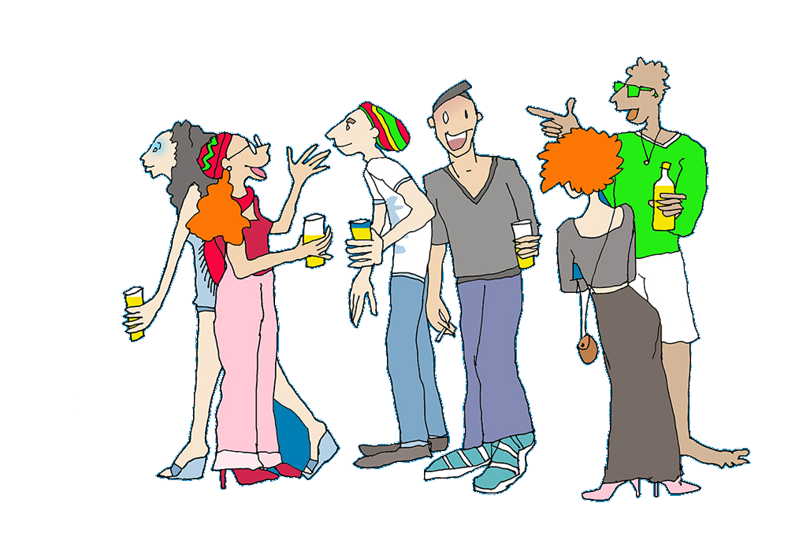</img></p>

<div class="has-light-background reset-margin" style="background-color: #FFFFFF00; padding: 60px; box-sizing: border-box; position: absolute; left: 0px; top: 480px; height: 480px; min-height: 480px; width: 729.6px; display: flex; flex-direction: column; align-items: center; justify-content: space-evenly" align="justify">

# Group Introduction <!-- .element: style="font-size: 80px" -->
# Kennenlernen<!-- .element: style="font-size: 80px; color: blue" -->
</div></script></section><section  data-markdown><script type="text/template"><!-- .slide: class="drop" data-background-image="Bilder/blue-abstract-gradient-wave-wallpaper.jpg" -->
<div class="has-light-background reset-margin" style="background-color: #FFFFFF00; padding: 60px; box-sizing: border-box; position: absolute; left: 0px; top: 0px; height: 240px; min-height: 240px; width: 1920px; display: flex; flex-direction: column; align-items: center; justify-content: space-evenly" align="justify">

# Course Overview: Timeline & Structure  <!-- .element: style="font-size: 80px" -->
# Kursübersicht: Zeitplan und Struktur <!-- .element: style="font-size: 80px; color: blue" -->
</div>
<div class="has-light-background reset-margin" style="background-color: #FFFFFF88; padding: 0px; box-sizing: border-box; position: absolute; left: 19.2px; top: 240px; height: 840px; min-height: 840px; width: 921.5999999999999px; display: flex; flex-direction: column; align-items: center; justify-content: space-evenly" align="justify">

- Part 1 : Introduction: Philosophies & Intention
- Part 2 : Five - Step Juggling
- Part 3 : Process Formations
- Part 4 : Spatial Sequencing Maps
- Part 5 : Prop Swap Notation + Juggleboard
- Part 6 : Primary Composition
- Part 7 : Prop Swap Notation (Open + Mixed State)
- Part 8 : Sensory facilitation
- Part 9 : Supporting Independence
- Part 10 : Functional Transformation
- Part 11 : The Future / Getting involved
</div>

<div class="has-light-background reset-margin" style="background-color: #FFFFFF88; padding: 0px; box-sizing: border-box; position: absolute; left: 979.1999999999999px; top: 240px; height: 840px; min-height: 840px; width: 921.5999999999999px; display: flex; flex-direction: column; align-items: center; justify-content: space-evenly" align="justify">

- Teil 1: Einführung: Philosophie & Intention<!-- .element: style="color: blue" -->
- Teil 2 : 5 Schritte Methode<!-- .element: style="color: blue" -->
- Teil 3: "Process Formations"<!-- .element: style="color: blue" -->
- Teil 4: Räumliche Anordnung<!-- .element: style="color: blue" -->
- Teil 5 : Prop Swap-Notation <!-- .element: style="color: blue" -->
- Teil 6: Primäre Komposition<!-- .element: style="color: blue" -->
- Teil 7 : Prop-Swap-Notation (Open + Mixed State)<!-- .element: style="color: blue" -->
- Teil 8: Sensorische Unterstützung<!-- .element: style="color: blue" -->
- Teil 9 : Unterstützung der Selbstständigkeit<!-- .element: style="color: blue" -->
- Teil 10 : Funktionale Transformation<!-- .element: style="color: blue" -->
- Teil 11 : Die Zukunft / Sich engagieren<!-- .element: style="color: blue" -->
</div>
</script></section><section  data-markdown><script type="text/template">
<!-- .slide: class="drop" data-background-image="Bilder/blue-abstract-gradient-wave-wallpaper.jpg" -->
# QR Code for the presentation

<p style="line-height: 0" class="reset-paragraph"></img></p>


https://abhuva.github.io
</script></section><section ><section data-markdown><script type="text/template">
<!-- .slide: class="drop" data-background-image="Bilder/blue-abstract-gradient-wave-wallpaper.jpg" -->
<div class="has-light-background reset-margin" style="background-color: #FFFFFF00; padding: 60px; box-sizing: border-box; position: absolute; left: 0px; top: 0px; height: 1200px; min-height: 1200px; width: 1920px; display: flex; flex-direction: column; align-items: flex-start; justify-content: space-evenly" align="left">

# Part 1 - Introduction: Philosophies & Intention <!-- .element: style="font-size: 75px" -->
# Teil 1 - Einführung: Philosophie und Ziele <!-- .element: style="font-size: 75px; color: blue" -->
</div>

</script></section><section data-markdown><script type="text/template"><div class="has-dark-background reset-margin" style="background-color: #FF000000; padding: 00px; box-sizing: border-box; position: absolute; left: 0px; top: 0px; height: 1200px; min-height: 1200px; width: 1920px; display: flex; flex-direction: column; align-items: center; justify-content: space-evenly" align="justify">

<p style="line-height: 0" class="reset-paragraph">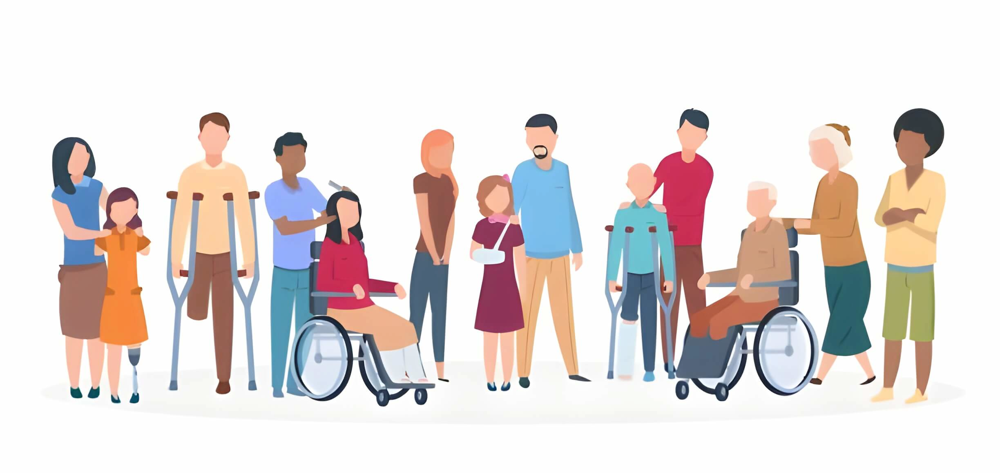</img></p>

</div>
<!-- .slide: class="drop" data-background-image="Bilder/blue-abstract-gradient-wave-wallpaper.jpg" -->
<div class="has-light-background reset-margin" style="background-color: #FFFFFF00; padding: 60px; box-sizing: border-box; position: absolute; left: 0px; top: 0px; height: 1200px; min-height: 1200px; width: 1920px; display: flex; flex-direction: column; align-items: center; justify-content: space-evenly" align="justify">

# Functional Juggling - overview context, form and intention<!-- .element: style="font-size: 60px" -->
# Überblick über Kontext, Form und Ziele des funktionalen Jonglierens<!-- .element: style="font-size: 60px; color: blue" -->

- Inclusive: Every person, regardless of age or abilities / limitations
- Inklusiv: Jeder Mensch, egal welchen Alters oder mit welchen Fähigkeiten / Einschränkungen<!-- .element: style="color: blue" -->
- Movement promotion relevant to everyday life
- Alltagsrelevante Bewegungsförderung<!-- .element: style="color: blue" -->
- Adaptable to individual goals of movement promotion
- Anpassbar an individuelle Ziele der Bewegungsförderung<!-- .element: style="color: blue" -->
- Juggling serves as the model for explaining and understanding how to look at obstacles and turn them into opportunities.
- Das Jonglieren dient als Modell, um zu erklären und zu verstehen, wie man Hindernisse in Möglichkeiten umwandeln kann.<!-- .element: style="color: blue" -->
</div>
</script></section><section data-markdown><script type="text/template">
<!-- .slide: data-background-image="Bilder/blue-abstract-gradient-wave-wallpaper.jpg" -->
# Method of Functional Juggling: Origin and overview <!-- .element: style="font-size: 60px" -->
# Methode des  Functional Juggling: Entstehung und Überblick <!-- .element: style="font-size: 60px; color: blue" -->
</script></section><section data-markdown><script type="text/template">
# About Craig<!-- .element: style="font-size: 0px; color: white" -->

<!-- .slide: class="drop" data-background-image="Bilder/blue-abstract-gradient-wave-wallpaper.jpg" -->
<p style="line-height: 0" class="reset-paragraph"></img></p>

<div class="has-dark-background reset-margin" style="background-color: #FF0000; padding: 20px; box-sizing: border-box; position: absolute; left: 960px; top: 456px; height: 660px; min-height: 660px; width: 960px; display: flex; flex-direction: column; align-items: center; justify-content: space-evenly" align="justify">

- Craig Quat<!-- .element: style="color: white" -->
- developed the methodology ca. 2010<!-- .element: style="color: white" -->
- entwickelte die Methodik ca. 2010<!-- .element: style="color: black" -->
- collaboration with clinics, neuroscientists and therapy centers
- zusammenarbeit mit Kliniken, Neurowissenschaftlern & Therapiezentren<!-- .element: style="color: black" -->
- Foundation of the "Collective" network in now more than 20 countries
- Gründung des “Collective”-Netzwerk in mittlerweile über 20 Ländern<!-- .element: style="color: black" -->
</div>

<p style="line-height: 0" class="reset-paragraph"></img></p>

</script></section><section data-markdown><script type="text/template">
<!-- .slide: class="drop" data-background-image="Bilder/blue-abstract-gradient-wave-wallpaper.jpg" -->
<div class="has-dark-background reset-margin" style="background-color: #FF000000; padding: 00px; box-sizing: border-box; position: absolute; left: 0px; top: 0px; height: 1200px; min-height: 1200px; width: 1920px; display: flex; flex-direction: column; align-items: center; justify-content: space-evenly" align="justify">

<p style="line-height: 0" class="reset-paragraph"></img></p>

</div>
<div class="has-dark-background reset-margin" style="background-color: #FF000000; padding: 00px; box-sizing: border-box; position: absolute; left: 0px; top: 0px; height: 1200px; min-height: 1200px; width: 1920px; display: flex; flex-direction: column; align-items: center; justify-content: space-evenly" align="justify">


# Lets talk about juggling<!-- .element: style="font-size: 80px; color: black" -->

> - If our goal is to make juggling more accessible, we first have to talk about what we mean with the term "juggling"<!-- .element: style="font-size: 55px; color: black" -->

.

> - Wenn unser Ziel darin besteht, das Jonglieren zugänglicher zu machen, müssen wir zuerst darüber sprechen, was wir mit dem Begriff "Jonglieren" meinen.<!-- .element: style="font-size: 55px; color: blue" -->

Discussion: What is juggling for you?<!-- .element: style="font-size: 80px; color: black" -->
</div></script></section><section data-markdown><script type="text/template">
<!-- .slide: data-background-image="Bilder/blue-abstract-gradient-wave-wallpaper.jpg" -->
# Expression vs Experience<!-- .element: style="font-size: 80px" -->
# Ausdruck vs eigenes Erleben"<!-- .element: style="font-size: 80px; color: blue" -->

- when we describe juggling only by its actions (juggling clubs, balls etc..), we limit ourself
- Wenn wir das Jonglieren nur durch seine sichtbaren Handlungen (jonglieren mit Keulen, Bällen etc.) beschreiben, beschränken wir uns selbst.<!-- .element: style="color: blue" -->

<p style="line-height: 0" class="reset-paragraph"></img></p>


- juggling a cascade with clubs looks different than with balls (expression), but the internal experience of juggling a cascade is mainly the same (experience)
- das Jonglieren einer Kaskade mit Keulen sieht anders aus als mit Bällen (Ausdruck), aber das innere Erleben des Jonglierens einer Kaskade ist im Wesentlichen dasselbe (Erfahrung/Erleben)<!-- .element: style="color: blue" -->
</script></section><section data-markdown><script type="text/template"><!-- .slide: class="drop" data-background-image="Bilder/blue-abstract-gradient-wave-wallpaper.jpg" -->
<div class="has-dark-background reset-margin" style="background-color: #FF000000; padding: 00px; box-sizing: border-box; position: absolute; left: 1305.6px; top: 120px; height: 1200px; min-height: 1200px; width: 576px; display: flex; flex-direction: column; align-items: center; justify-content: space-evenly" align="justify">

<p style="line-height: 0" class="reset-paragraph">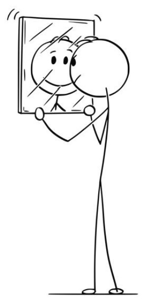</img></p>

</div>


# A different way to look at it
# Eine andere Sichtweise der Dinge<!-- .element: style="color: blue" -->

> - we are understanding juggling as states of relationships between actions<!-- .element: style="font-size: 60px" -->
> - wir verstehen Jonglieren als Verhältnis von Handlungen zueinander<!-- .element: style="font-size: 60px; color: blue" -->
> - Juggling cannot and should not be defined by the outcomes of its physical expression.<!-- .element: style="font-size: 60px" -->
> - Jonglieren kann und sollte nicht durch die sichtbaren Ergebnisse einer körperlichen Erfahrung definiert werden.<!-- .element: style="font-size: 60px; color: blue" -->
</script></section><section data-markdown><script type="text/template">
<!-- .slide: data-background-image="Bilder/blue-abstract-gradient-wave-wallpaper.jpg" -->
# Quat Props Formula Definition of Juggling<!-- .element: style="font-size: 80px" -->
# Quat Props Formel/Definition von Jonglieren<!-- .element: style="font-size: 80px; color: blue" -->
> a managed sequence of anti-entropic orbital events harmonised in space and time

.

> eine gesteuerte Abfolge von geordneten, räumlich und zeitlich aufeinander abgestimmten, orbitalen Ereignissen<!-- .element: style="color: blue" -->
</script></section><section data-markdown><script type="text/template">
<!-- .slide: data-background-image="Bilder/blue-abstract-gradient-wave-wallpaper.jpg" -->

# global activation

- its not only about the increased motor-control
- es geht nicht nur um die verbesserte motorische Kontrolle<!-- .element: style="color: blue" -->
- we can see a state of mind, called global activation
- dieser Zustand wird als globale Aktivierung bezeichnet<!-- .element: style="color: blue" -->
- regions all over the brain are active
- Regionen im gesamten Gehirn sind aktiv<!-- .element: style="color: blue" -->
- similar to activities like yoga, music or dance
- ähnlich wie bei Aktivitäten wie Yoga, Musik oder Tanz<!-- .element: style="color: blue" -->
- we see similar brain activity while in Flow State
- wir sehen eine ähnliche Gehirnaktivität im Flow-Zustand<!-- .element: style="color: blue" -->

<p style="line-height: 0" class="reset-paragraph"></img></p>

</script></section><section data-markdown><script type="text/template">
<!-- .slide: data-background-image="Bilder/blue-abstract-gradient-wave-wallpaper.jpg" -->
# flow state

- introduced 1975 by Mihály Csíkszentmihályi
- eingeführt 1975 by Mihály Csíkszentmihályi<!-- .element: style="color: blue" -->
- Flow can occur in the control of a complex, fast-moving event in the range between overload and underload. 
- Flow kann bei der Steuerung eines komplexen, schnell ablaufenden Geschehens im Bereich zwischen Überforderung und Unterforderung entstehen. <!-- .element: style="color: blue" -->
- Flow access and flow experience vary from individual to individual. 
- Der Flow-Zugang und das Flow-Erleben sind individuell unterschiedlich. <!-- .element: style="color: blue" -->

<p style="line-height: 0" class="reset-paragraph"></img></p>

</script></section><section data-markdown><script type="text/template">
<!-- .slide: data-background-image="Bilder/blue-abstract-gradient-wave-wallpaper.jpg" -->
# what defines flow state

- feel capable of meeting the demands placed on yourself (the difficulty of the task and the ability to solve it are in balance).
- sich den selbst gestellten Anforderungen gewachsen fühlen (Schwierigkeit der Aufgabe und Lösungskompetenz befinden sich im Gleichgewicht).<!-- .element: style="color: blue" -->
- The attention is concentrated on a limited, manageable field of action.
- Die Aufmerksamkeit ist konzentriert auf ein begrenztes, überschaubares Handlungsfeld<!-- .element: style="color: blue" -->
- Clear feedback is given on the activities (the success of the action is immediately recognizable).
- Auf die Aktivitäten erfolgen klare Rückmeldungen (der Handlungserfolg wird sofort erkennbar).<!-- .element: style="color: blue" -->
- Action and consciousness merge (an external world does not exist).
- Handeln und Bewusstsein verschmelzen miteinander (eine Außenwelt existiert nicht).<!-- .element: style="color: blue" -->
- Fully absorbed in the activity
- Voll in der Tätigkeit aufgehen<!-- .element: style="color: blue" -->
- The sense of time changes (being completely in the here and now).
- Das Zeitgefühl verändert sich (ganz im Hier und Jetzt sein).<!-- .element: style="color: blue" -->
- The activity rewards itself (no outside praise is needed).
- Die Tätigkeit belohnt sich selbst (es bedarf keines Lobes von außen).<!-- .element: style="color: blue" -->
</script></section><section data-markdown><script type="text/template">
<!-- .slide: data-background-image="Bilder/blue-abstract-gradient-wave-wallpaper.jpg" -->
# flow state diagram

<p style="line-height: 0" class="reset-paragraph"></img></p>

</script></section><section data-markdown><script type="text/template">
<!-- .slide: data-background-image="Bilder/blue-abstract-gradient-wave-wallpaper.jpg" -->
# how we produce flow

- Intentionally triggered anxiety by lack of explanation and constant increase in challenge level.  This produces release of adrenaline in the brain
- Absichtlich ausgelöste Anspannung durch fehlende Erklärungen und ständige Erhöhung des Schwierigkeitsgrads.  Dies führt zur Ausschüttung von Adrenalin im Gehirn<!-- .element: style="color: blue" -->
- Reward stimulation of Dopamine, triggered by continuous sensation of success. Participants brains are flooded with adrenaline and dopamine, which lays foundational conditions for Flow-State
- Belohnungsstimulation von Dopamin, ausgelöst durch ständige Erfolgserlebnisse. Die Gehirne der Teilnehmer werden mit Adrenalin und Dopamin überflutet, was die Grundvoraussetzungen für den Flow-Zustand schafft<!-- .element: style="color: blue" -->
- Uninterrupted continuous stimulation and increase complexity of challenge consuming the focus and attention of participant
- Ununterbrochene kontinuierliche Stimulation und zunehmende Komplexität der Herausforderung, die den Fokus und die Aufmerksamkeit des Teilnehmers beansprucht<!-- .element: style="color: blue" -->
</script></section><section data-markdown><script type="text/template">
<!-- .slide: class="drop" data-background-image="Bilder/blue-abstract-gradient-wave-wallpaper.jpg" -->
<div class="has-dark-background reset-margin" style="background-color: #FF000000; padding: 00px; box-sizing: border-box; position: absolute; left: 0px; top: 0px; height: 1200px; min-height: 1200px; width: 1920px; display: flex; flex-direction: column; align-items: center; justify-content: space-evenly" align="justify">

<p style="line-height: 0" class="reset-paragraph">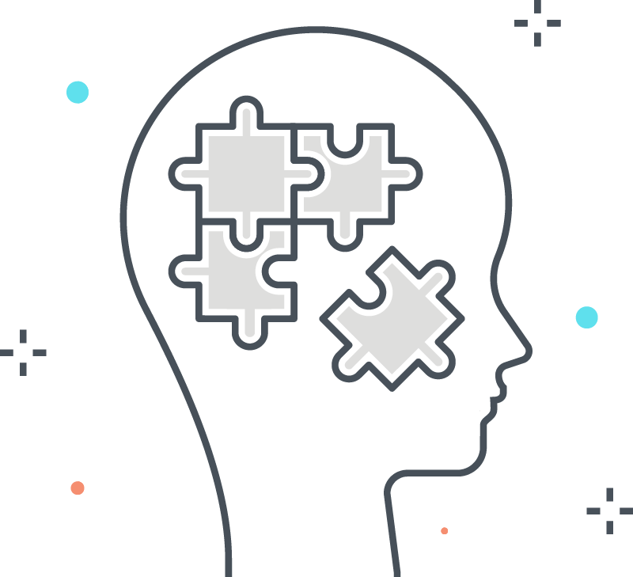</img></p>

</div>

# Cognitive Impacts
# Kognitive Auswirkungen<!-- .element: style="color: blue" -->
- the physical movements (of juggling) stimulate specific parts in the brain
- die körperlichen Bewegungen (des Jonglierens) stimulieren bestimmte Bereiche des Gehirns<!-- .element: style="color: blue" -->
- we look to recreate these cognitive sequences through modified movements and actions
- wir versuchen, diese kognitiven Vorgänge durch veränderte Bewegungen und Handlungen nachzubilden<!-- .element: style="color: blue" -->
- several studies regarding the benefits of juggling [Link](https://www.quatprops.net/research)
- verschiedene Studien bezüglich der Auswirkungen/Vorteile des Jonglierens: <!-- .element: style="color: blue" --> [Link](https://www.quatprops.net/research)

> outcomes are determined mainly by amount of time spend in state of mind, not by technical challenge

.

> die Ergebnisse werden hauptsächlich durch die Zeit bestimmt, die man in einem geistigen Zustand verbringt, nicht durch die technische Herausforderung<!-- .element: style="color: blue" -->
</script></section><section data-markdown><script type="text/template">
<!-- .slide: data-background-image="Bilder/blue-abstract-gradient-wave-wallpaper.jpg" -->
# Accessibility Challenges / Mainstream Absence<!-- .element: style="font-size: 80px" -->
# Herausforderungen bei der Zugänglichkeit / Abwesenheit im Mainstream<!-- .element: style="font-size: 80px; color: blue" -->
</script></section><section data-markdown><script type="text/template">
<!-- .slide: class="drop" data-background-image="Bilder/blue-abstract-gradient-wave-wallpaper.jpg" -->
<div class="has-dark-background reset-margin" style="background-color: #FF000000; padding: 00px; box-sizing: border-box; position: absolute; left: 0px; top: 0px; height: 1200px; min-height: 1200px; width: 1920px; display: flex; flex-direction: column; align-items: center; justify-content: space-evenly" align="justify">

<p style="line-height: 0" class="reset-paragraph"></img></p>

</div>
<div class="has-dark-background reset-margin" style="background-color: #00000000; padding: 00px; box-sizing: border-box; position: absolute; left: 0px; top: 0px; height: 1200px; min-height: 1200px; width: 1920px; display: flex; flex-direction: column; align-items: center; justify-content: space-evenly" align="justify">

# Discussion<!-- .element: style="color: black" -->

> - conversation about common reactions and negative perspective of learning (to juggle) with examples of how peaple respond with saying "no" or making excuses<!-- .element: style="font-size: 60px; color: black" -->
> - Gespräch über häufige Reaktionen und negative Vorstellungen vom Jonglieren lernen mit Beispielen, wie Menschen mit "Nein" oder mit Ausreden reagieren<!-- .element: style="font-size: 60px; color: blue" -->
</div>
</script></section><section data-markdown><script type="text/template">
<!-- .slide: data-background-image="Bilder/blue-abstract-gradient-wave-wallpaper.jpg" -->
- despite high impact of desired outcomes, social reluctance to embrace mainstream implementation
- trotz der großen Wirkung / wünschenswerten Ergebnisse, gesellschaftliche Zurückhaltung bei der Umsetzung im Alltag<!-- .element: style="color: blue" -->
- connected to misinterpreted state of lower level accassibility (not viewed as something for everyone)
- im Zusammenhang mit der (falschen) Idee der geringeren Zugänglichkeit (nicht als etwas für jedermann angesehen)<!-- .element: style="color: blue" -->
</script></section><section data-markdown><script type="text/template">
<!-- .slide: data-background-image="Bilder/blue-abstract-gradient-wave-wallpaper.jpg" -->
# so - what is missing?
# Was fehlt also?<!-- .element: style="color: blue" -->
</script></section><section data-markdown><script type="text/template">
<!-- .slide: class="drop" data-background-image="Bilder/blue-abstract-gradient-wave-wallpaper.jpg" -->
# where we choose our startpoint<!-- .element: style="font-size: 70px" -->
# wo wir unseren Startpunkt wählen<!-- .element: style="font-size: 70px; color: blue" -->

<div class="has-light-background reset-margin" style="background-color: #FFFFFF00; padding: 0px; box-sizing: border-box; position: absolute; left: 0px; top: 0px; height: 1200px; min-height: 1200px; width: 1920px; display: flex; flex-direction: column; align-items: center; justify-content: space-evenly" align="justify">

<p style="line-height: 0" class="reset-paragraph"></img></p>

</div>
<p style="line-height: 0" class="reset-paragraph">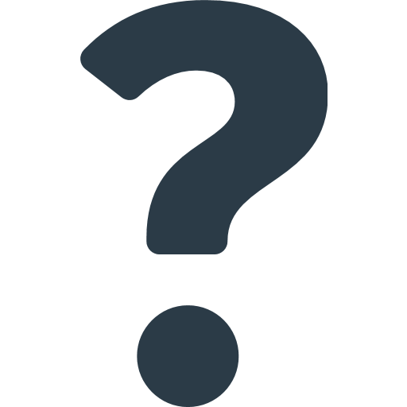</img></p>


</script></section><section data-markdown><script type="text/template">
<!-- .slide: class="drop" data-background-image="Bilder/blue-abstract-gradient-wave-wallpaper.jpg" -->
# Linear vs non-linear Learning<!-- .element: style="font-size: 70px" -->

- Linear Learning / Scaffolding
- Lineares Lernen / Unterstützendes Lernen<!-- .element: style="color: blue" -->

<p style="line-height: 0" class="reset-paragraph"></img></p>

<p style="line-height: 0" class="reset-paragraph"></img></p>


- the key difference is that while learning to jump with this aproach, i experience the movement  the whole time
- Der Hauptunterschied besteht darin, dass ich beim Erlernen des Springens mit dieser Methode die Bewegung die ganze Zeit über erlebe.<!-- .element: style="color: blue" -->
- while by learning to juggle with this aproach - i dont have the full experience until i am able to do it
- während ich beim Erlernen des Jonglierens mit dieser Methode nicht die volle Erfahrung mache, bis ich es kann<!-- .element: style="color: blue" -->
</script></section><section data-markdown><script type="text/template">
<!-- .slide: class="drop" data-background-image="Bilder/blue-abstract-gradient-wave-wallpaper.jpg" -->
# non-linear learning models<!-- .element: style="font-size: 70px" -->
# nicht-lineare Lernmodelle<!-- .element: style="font-size: 70px; color: blue" -->

<div class="has-light-background reset-margin" style="background-color: #FFFFFF00; padding: 0px; box-sizing: border-box; position: absolute; left: 0px; top: 0px; height: 1200px; min-height: 1200px; width: 1920px; display: flex; flex-direction: column; align-items: center; justify-content: space-evenly" align="justify">

<p style="line-height: 0" class="reset-paragraph"></img></p>

</div>

- experience something as part of its own learning process
- etwas als Teil des eigenen Lernprozesses zu erleben<!-- .element: style="color: blue" -->
- with juggling there is less of a physical risk with failure but an emotional
- Beim Jonglieren besteht weniger ein physisches Risiko des Scheiterns, sondern ein emotionales<!-- .element: style="color: blue" -->
</script></section><section data-markdown><script type="text/template">
<!-- .slide: data-background-image="Bilder/blue-abstract-gradient-wave-wallpaper.jpg" -->
# what makes learning accessible<!-- .element: style="font-size: 70px" -->
# was Lernen zugänglich macht<!-- .element: style="font-size: 70px; color: blue" -->

- where we choose to determine the start point of it
- wo wir den Ausgangspunkt der Erfahrung festlegen<!-- .element: style="color: blue" -->
- how we choose to define the outcome of its experience
- wie wir das Ergebnis der Tätigkeit definieren<!-- .element: style="color: blue" -->
- the model of learning we apply to develop its capacity
- das Lernmodell, das wir anwenden, um die Fähigkeiten zu entwickeln<!-- .element: style="color: blue" -->

</script></section><section data-markdown><script type="text/template">
<!-- .slide: data-background-image="Bilder/blue-abstract-gradient-wave-wallpaper.jpg" -->
# specific for learning toss-juggling<!-- .element: style="font-size: 70px" -->
# speziell für das Erlernen der Wurfjonglage<!-- .element: style="font-size: 70px; color: blue" -->
- juggling is not its action but its experience
- Jonglieren ist nicht seine Handlung, sondern seine Erfahrung<!-- .element: style="color: blue" -->
- juggling does not begin at 3-ball tossing cascade
- Jonglieren beginnt nicht mit der Kaskade des 3-Bälle-Werfens<!-- .element: style="color: blue" -->
- linear scaffolding is only effective when the (full) experience of the activity is included in the learning process
- lineare Zergliederung in Einzelschritte ist nur dann effektiv, wenn die (komplette) Erfahrung der Aktivität in den Lernprozess einbezogen wird<!-- .element: style="color: blue" -->
</script></section><section data-markdown><script type="text/template"><!-- .slide: data-background-image="Bilder/blue-abstract-gradient-wave-wallpaper.jpg" -->
# Our solution<!-- .element: style="font-size: 70px" -->
# Unsere Lösung<!-- .element: style="font-size: 70px; color: blue" -->

- we try to find ways to allow the participant to have the full experience 
- wir versuchen, Wege zu finden, die es dem Teilnehmer ermöglichen, die vollständige Erfahrung (der Bewegung) zu machen <!-- .element: style="color: blue" -->
- we try to develop the internal concepts / base conditions needed
- wir versuchen, die notwendigen internen Konzepte / Grundvoraussetzungen zu entwickeln<!-- .element: style="color: blue" -->
- beeing aware of possible downsides to linear learning models and choose alternatives 
- wir sind uns der möglichen Nachteile linearer Lernmodelle bewusst und wählen Alternativen<!-- .element: style="color: blue" -->
</script></section><section data-markdown><script type="text/template">
<!-- .slide: data-background-image="Bilder/blue-abstract-gradient-wave-wallpaper.jpg" -->
# Our understanding of "Functional" Juggling<!-- .element: style="font-size: 70px" -->
# Unser Verständniss von "Funktionalem" Jonglieren<!-- .element: style="font-size: 70px; color: blue" -->

- Interactions with juggling are considered to be functional whenever there is an intention to develop something other than the expression of juggling itself.
- Interaktionen mit dem Jonglieren werden als funktional betrachtet, wenn die Absicht besteht, etwas anderes zu erreichen als nur den Ausdruck des Jonglierens selbst.<!-- .element: style="color: blue" -->
- Functional Juggling is juggling, only with slightly different expectations for its outcomes.
- Funktionales Jonglieren ist Jonglieren, nur mit etwas anderen Erwartungen an die Ergebnisse.<!-- .element: style="color: blue" -->
</script></section></section><section ><section data-markdown><script type="text/template">
<!-- .slide: data-background-image="Bilder/blue-abstract-gradient-wave-wallpaper.jpg" -->
# Part 2 : Five-Step Juggling<!-- .element: style="font-size: 80px" -->
# Teil 2 : Die 5 Schritte Methode<!-- .element: style="font-size: 80px; color: blue" -->
- Concepts before Components
- Konzepte zuerst (Juggleboard oder Body-Juggling) / Bewegungsplanung<!-- .element: style="color: blue" -->
- Sequencing Capacity (Cow jumps over the moon)
- Sequenzierungskapazität erhöhen (Die Kuh springt über den Mond)<!-- .element: style="color: blue" -->
- Traditional Method of Teaching 3 Balls
- Traditionelle Lernmethode für 3 Bälle<!-- .element: style="color: blue" -->
</script></section><section data-markdown><script type="text/template">
<!-- .slide: data-background-image="Bilder/blue-abstract-gradient-wave-wallpaper.jpg" -->
# Step 1: Concepts before Components<!-- .element: style="font-size: 80px" -->
# Schritt 1 : Konzepte zuerst<!-- .element: style="font-size: 80px; color: blue" -->
- Body Juggling (Floor / Shoulder / Under Arm / Elbow)

> reduces anciety and increase motivation through accessible challenge, insured success and perception of diverse skill development

.

>Abbau von Ängsten und Steigerung der Motivation durch leicht zugängliche Herausforderungen, gesicherte Erfolge und die Wahrnehmung der Entwicklung verschiedener Fähigkeiten<!-- .element: style="color: blue" -->
</script></section><section data-markdown><script type="text/template">
<!-- .slide: data-background-image="Bilder/blue-abstract-gradient-wave-wallpaper.jpg" -->
# creative expression<!-- .element: style="font-size: 80px" -->
# kreativer Ausdruck<!-- .element: style="font-size: 80px; color: blue" -->

- once participants understand a new skill, opportunity to create and express should be provided
- Sobald die Teilnehmer eine neue Fertigkeit verstanden haben, sollten sie die Möglichkeit haben, etwas zu erfinden und sich auszudrücken.<!-- .element: style="color: blue" -->
- this produces a personal relationship with the activity and leads to higher motivation
- Dadurch entsteht eine persönliche Beziehung zu der Aktivität, was zu einer höheren Motivation führt.<!-- .element: style="color: blue" -->
- some participants will do this on their own, while others might need additional guidance or encouragment to start
- Einige Teilnehmer werden dies selbst tun, während andere möglicherweise zusätzliche Anleitung oder Ermutigung benötigen, um zu beginnen.<!-- .element: style="color: blue" -->
</script></section><section data-markdown><script type="text/template">
<!-- .slide: data-background-image="Bilder/blue-abstract-gradient-wave-wallpaper.jpg" -->
# Step 2: Sequencing Capacity<!-- .element: style="font-size: 60px" -->
# Schritt 2 : Bewegungsplanung<!-- .element: style="font-size: 60px; color: blue" -->

### "The cow jumps over the moon" - "Die Kuh springt über den Mond"
- developing cognitive sequencing capacities through narrative based playful instructions
- Entwicklung kognitiver Sequenzierungsfähigkeiten durch narrativ basierte spielerische Anweisungen<!-- .element: style="color: blue" -->
- 312 (Siteswap) exercises (over the moon, through the moon)
- 312 (Siteswap) Übungen (über den Mond, durch den Mond)<!-- .element: style="color: blue" -->
- lateral column throws (out and in of the barn)
- seitliche Säulenwürfe (aus dem  Stall heraus und in den Stall hinein)<!-- .element: style="color: blue" -->
- bi-lateral cascade sequencing (between the barns)
- Bi-laterale Sequenzierung (zwischen den Ställen)<!-- .element: style="color: blue" -->
- possible help with the use of "shadow juggling" technique
- mögliche Hilfe durch den Einsatz der Technik des "Schattenjonglierens".<!-- .element: style="color: blue" -->

</script></section><section data-markdown><script type="text/template">
<!-- .slide: class="drop" data-background-image="Bilder/blue-abstract-gradient-wave-wallpaper.jpg" -->
<div class="has-dark-background reset-margin" style="background-color: #FF000000; padding: 00px; box-sizing: border-box; position: absolute; left: 0px; top: 0px; height: 1200px; min-height: 1200px; width: 1920px; display: flex; flex-direction: column; align-items: center; justify-content: space-evenly" align="justify">

<p style="line-height: 0" class="reset-paragraph"></img></p>

</div>

# Step 3,4,5 : Traditional Technic<!-- .element: style="font-size: 80px" -->
# Schritt 3,4,5 : Klassische Methode<!-- .element: style="font-size: 80px; color: blue" -->

- use your personal method of training
- persönliche Trainingsmethode anwenden<!-- .element: style="color: blue" -->
- possible to move faster through the process as much of the capacities have already been developed
- Es ist möglich, den Prozess schneller zu durchlaufen, da ein Großteil der Fähigkeiten bereits entwickelt wurde.<!-- .element: style="color: blue" -->

> - Activity: Share your own ways to teach 3 ball tossing and methods to help with it
> - Aktivität: Tauschen Sie sich über Ihre eigenen Methoden aus, wie Sie das Werfen mit 3 Bällen lehren und wie Sie dabei helfen können<!-- .element: style="color: blue" -->
</script></section><section data-markdown><script type="text/template">
<!-- .slide: data-background-image="Bilder/blue-abstract-gradient-wave-wallpaper.jpg" -->
# Examples<!-- .element: style="font-size: 60px" -->
# Beispiele<!-- .element: style="font-size: 60px; color: blue" -->

- 5 object Ultimates (rolling or tossing), tossing is easier with rings
- 5 Objekte Ultimates (Rollen oder Werfen), Werfen ist einfacher mit Ringen<!-- .element: style="color: blue" -->
- Shadow Juggling
- Schatten-Jonglage<!-- .element: style="color: blue" -->
- 2 Persons share 3 balls
- 2 Personen teilen sich 3 Bälle<!-- .element: style="color: blue" -->
- restricted elbows (stretch band), russian style training
- Eingeschränkte Ellbogen (Stretchband), russischer Stil<!-- .element: style="color: blue" -->
</script></section><section data-markdown><script type="text/template">
<!-- .slide: data-background-image="Bilder/blue-abstract-gradient-wave-wallpaper.jpg" -->
# Key concepts<!-- .element: style="font-size: 60px" -->
# Schlüsselkonzepte<!-- .element: style="font-size: 60px; color: blue" -->

- emphasis on social and emotional learning outcomes
- Schwerpunkt auf sozialen und emotionalen Lernergebnissen<!-- .element: style="color: blue" -->
- instruction through narrative based intention (oppose to technical explanation)
- Unterricht durch erzählerische Darstellung (im Gegensatz zu technischen Erklärungen)<!-- .element: style="color: blue" -->
- propose problem solving environments (oppose to direct solutions)
- Raum für eigene Lösungen lassen  (im Gegensatz zu direkten Lösungen)<!-- .element: style="color: blue" -->
- structured accomplishment builds emotional resilience, confidence and perseverance
- strukturierte Erfolge bauen emotionale Widerstandsfähigkeit, Selbstvertrauen und Ausdauer auf<!-- .element: style="color: blue" -->
- creative expression is part of learning and offers personal relationship and motivation
- kreativer Ausdruck ist Teil des Lernens und bietet persönliche Beziehung und Motivation<!-- .element: style="color: blue" -->
</script></section></section><section ><section data-markdown><script type="text/template">
<!-- .slide: data-background-image="Bilder/blue-abstract-gradient-wave-wallpaper.jpg" -->
# Part 3 : Process formations of juggling sequencing capacities<!-- .element: style="font-size: 80px" -->
# Teil 3 : Bewegungssequenzen<!-- .element: style="font-size: 80px; color: blue" -->
</script></section><section data-markdown><script type="text/template">
<!-- .slide: class="drop" data-background-image="Bilder/blue-abstract-gradient-wave-wallpaper.jpg" -->
<div class="has-dark-background reset-margin" style="background-color: #FF000000; padding: 00px; box-sizing: border-box; position: absolute; left: 0px; top: 0px; height: 1200px; min-height: 1200px; width: 1920px; display: flex; flex-direction: column; align-items: center; justify-content: space-evenly" align="justify">

<p style="line-height: 0" class="reset-paragraph"></img></p>

</div>

# Reflection / Discussion<!-- .element: style="font-size: 80px" -->
# Reflektion / Diskussion<!-- .element: style="font-size: 80px; color: blue" -->

- Reflect back on accessibility of toss juggling.
- Reflektiere nochmal die Zugänglichkeit der Wurfjonglage.<!-- .element: style="color: blue" -->
- 5step method improves accessibility outcome of traditional toss juggling
- Die 5-Stufen-Methode verbessert das Ergebnis der Zugänglichkeit der traditionellen Wurfjonglage<!-- .element: style="color: blue" -->
- toss juggling still excludes large amounts functionally diverse populations from access
- Die Wurfjonglage schließt immer noch große Mengen funktionell unterschiedlicher Bevölkerungsgruppen vom Zugang aus.<!-- .element: style="color: blue" -->
</script></section><section data-markdown><script type="text/template">
<!-- .slide: data-background-image="Bilder/blue-abstract-gradient-wave-wallpaper.jpg" -->
# How do we change / resolve this inequality ?<!-- .element: style="font-size: 80px" -->
# Wie können wir diese Ungleichheit ändern?<!-- .element: style="font-size: 80px; color: blue" -->

- we must evaluate the internal experiential conditions produced by traditional juggling
- Wir müssen die internen empirischen Bedingungen bewerten, die durch das traditionelle Jonglieren erzeugt werden.<!-- .element: style="color: blue" -->
- analysing unique structures of the neurological communication signals triggered by set structures of coordinated bi-lateral movements
- Analyse der neurologischen Kommunikationssignale, die durch die festgelegten Muster der koordinierten beidseitigen Bewegungen ausgelöst werden<!-- .element: style="color: blue" -->
- given our understanding that juggling benefits are not associated with individual skill level but instead by the time spend in the state of condition of juggling
- die Vorteile des Jonglierens sind nicht mit dem individuellen Fähigkeitsniveau verbunden, sondern mit der Zeit, die im Zustand des Jonglierens verbracht wird<!-- .element: style="color: blue" -->
- this leads us to adapt our model of developmental progressions by a new standard of cognitive sequencing capacity
- Dies führt uns dazu, unser Modell der Fortschritte in der Entwicklung durch einen neuen Standard der kognitiven Sequenzierungskapazität anzupassen<!-- .element: style="color: blue" -->
</script></section><section data-markdown><script type="text/template">
<!-- .slide: data-background-image="Bilder/blue-abstract-gradient-wave-wallpaper.jpg" -->
# How does movement work?<!-- .element: style="font-size: 80px" -->
# Wie funktioniert Bewegung?<!-- .element: style="font-size: 80px; color: blue" -->
</script></section><section data-markdown><script type="text/template">
<!-- .slide: data-background-image="Bilder/blue-abstract-gradient-wave-wallpaper.jpg" -->
# Binary Forms<!-- .element: style="font-size: 80px" -->
# Binäre Formen<!-- .element: style="font-size: 80px; color: blue" -->

- for starters, the human body and brain are binary meaning that they consist of two halves: a left side and a right side. 
- Zunächst einmal sind der menschliche Körper und das Gehirn binär, das heißt, sie bestehen aus zwei Hälften: einer linken und einer rechten Seite.<!-- .element: style="color: blue" -->
- Each side is symmetric and mirrors that of the other, with the left side of the brain controlling the right side of the body, and vice versa.
- Jede Seite ist symmetrisch und spiegelt die der anderen, wobei die linke Seite des Gehirns die rechte Seite des Körpers steuert und umgekehrt.<!-- .element: style="color: blue" -->

<p style="line-height: 0" class="reset-paragraph"></img></p>

</script></section><section data-markdown><script type="text/template">
# Corpus Callosum

<!-- .slide: data-background-image="Bilder/blue-abstract-gradient-wave-wallpaper.jpg" -->
- Sensory information received from one side of the body is always processed first in the corresponding (opposite) side of the brain.
- Sensorische Informationen, die von einer Seite des Körpers empfangen werden, werden immer zuerst in der entsprechenden (gegenüberliegenden) Seite des Gehirns verarbeitet.<!-- .element: style="color: blue" -->
- Applying this dichotomy to the anatomy of our brain requires a discussion of a specific region known as the corpus callosum.
- Die Anwendung dieser Zweiteilung auf die Anatomie unseres Gehirns erfordert eine Diskussion über eine bestimmte Region, die als Corpus callosum bekannt ist.<!-- .element: style="color: blue" -->
- This structure is responsible for the communication of information between the two hemispheres of the brain.
- Diese Struktur ist für die Kommunikation von Informationen zwischen den beiden Gehirnhälften verantwortlich.<!-- .element: style="color: blue" -->

<p style="line-height: 0" class="reset-paragraph"></img></p>

</script></section><section data-markdown><script type="text/template">
<!-- .slide: class="drop" data-background-image="Bilder/blue-abstract-gradient-wave-wallpaper.jpg" -->
# Lateral / Bilateral

- Whenever something is experienced by one side of the body, sensory information about that experience must be communicated (first) to the corresponding side of the brain.
- Wann immer etwas von der einen Seite des Körpers erlebt wird, muss die sensorische Information über diese Erfahrung (zuerst) an die entsprechende Seite des Gehirns übermittelt werden.<!-- .element: style="color: blue" -->
- Depending on the outcome of the interaction, the information about the experience must now be communicated in one of two directions: laterally or bilaterally.
- Je nach dem Ergebnis der Interaktion muss die Information über die Erfahrung nun in eine von zwei Richtungen kommuniziert werden: lateral oder bilateral.<!-- .element: style="color: blue" -->

<div class="has-light-background reset-margin" style="background-color: #FFFFFF00; padding: 00px; box-sizing: border-box; position: absolute; left: 0px; top: 540px; height: 600px; min-height: 600px; width: 960px; display: flex; flex-direction: column; align-items: center; justify-content: space-evenly" align="justify">

### Lateral
<p style="line-height: 0" class="reset-paragraph">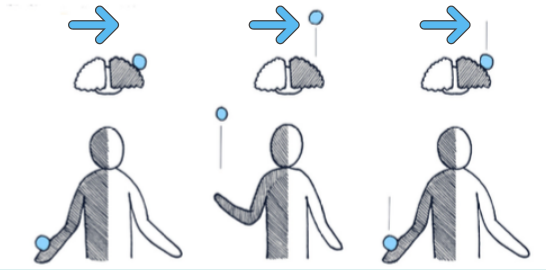</img></p>

</div>
<div class="has-light-background reset-margin" style="background-color: #FFFFFF00; padding: 00px; box-sizing: border-box; position: absolute; left: 960px; top: 540px; height: 600px; min-height: 600px; width: 960px; display: flex; flex-direction: column; align-items: center; justify-content: space-evenly" align="justify">

### Bilateral
<p style="line-height: 0" class="reset-paragraph">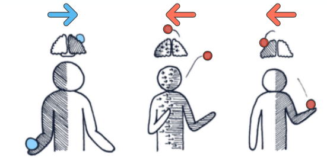</img></p>

</div>
</script></section><section data-markdown><script type="text/template">
<!-- .slide: class="drop" data-background-image="Bilder/blue-abstract-gradient-wave-wallpaper.jpg" -->
# Theorie der “Process Formations”<!-- .element: style="font-size: 60px" -->
# Tabelle der Prozesse (Raum/Zeit)<!-- .element: style="font-size: 60px; color: blue" -->

- The theory of "Process Formations" is a tabular listing that combines and shows all the possible combinations of our (binary) interactions with space and time.
- Die Theorie der “Process Formations” ist eine tabellarische Auflistung, die die gesamten möglichen Kombinationen unserer (binären) Interaktionen mit Raum und Zeit kombiniert und aufzeigt.<!-- .element: style="color: blue" -->

<div class="has-light-background reset-margin" style="background-color: #FFFFFF00; padding: 00px; box-sizing: border-box; position: absolute; left: 0px; top: 420px; height: 360px; min-height: 360px; width: 768px; display: flex; flex-direction: column; align-items: center; justify-content: space-evenly" align="justify">

# Space / Raum <!-- .element: style="font-size: 60px" -->
- Lateral
- Bilateral
</div>

<div class="has-light-background reset-margin" style="background-color: #FFFFFF00; padding: 00px; box-sizing: border-box; position: absolute; left: 576px; top: 420px; height: 360px; min-height: 360px; width: 768px; display: flex; flex-direction: column; align-items: center; justify-content: space-evenly" align="justify">

# Time / Zeit<!-- .element: style="font-size: 60px" -->
- Synchronous / Synchron
- Asynchronous / Asynchron
</div>

<div class="has-light-background reset-margin" style="background-color: #FFFFFF00; padding: 00px; box-sizing: border-box; position: absolute; left: 1152px; top: 420px; height: 360px; min-height: 360px; width: 768px; display: flex; flex-direction: column; align-items: center; justify-content: space-evenly" align="justify">

# Signal / Signal<!-- .element: style="font-size: 60px" -->
- Associated / Assoziiert
- Dissociated / Dissoziiert
</div>
</script></section><section data-markdown><script type="text/template">
<!-- .slide: data-background-image="Bilder/blue-abstract-gradient-wave-wallpaper.jpg" -->
# Space (lateral)<!-- .element: style="font-size: 60px" -->
# Raum (lateral)<!-- .element: style="font-size: 60px; color: blue" -->

- A lateral relationship to space means that information does not have to cross between the two cerebral hemispheres of our brain. This happens whenever there is an interaction on one side of the body that does not affect the experience of the other side.
- Eine laterale Beziehung zum Raum bedeutet, dass die Informationen nicht zwischen den beiden Großhirnhälften unseres Gehirns kreuzen müssen. Dies geschieht immer dann, wenn eine Interaktion auf einer Seite des Körpers stattfindet, die das Erleben der anderen Seite nicht beeinflusst.<!-- .element: style="color: blue" -->

<p style="line-height: 0" class="reset-paragraph">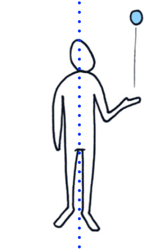</img></p>

</script></section><section data-markdown><script type="text/template">
<!-- .slide: data-background-image="Bilder/blue-abstract-gradient-wave-wallpaper.jpg" -->
# Space (bilateral)<!-- .element: style="font-size: 60px" -->
# Raum (bilateral)<!-- .element: style="font-size: 60px; color: blue" -->

- Bilateral relationships with space require that their information be communicated between the two sides of our brains, and there are several ways to trigger or subdivide these types of interactions.
- Bilaterale Beziehungen mit dem Raum erfordern, dass ihre Informationen zwischen den beiden Seiten unseres Gehirns kommuniziert werden, und es gibt mehrere Möglichkeiten, diese Arten von Interaktionen auszulösen oder zu unterteilen.<!-- .element: style="color: blue" -->
- 3 different types of bilateral relationships:
- 3 Arten von bilateralen Beziehungen<!-- .element: style="color: blue" -->

object exchange | location exchange | geometric exchange (mirroring)

Austausch von Objekten | Austausch von Orten | Geometrie (Spiegelung)<!-- .element: style="color: blue" -->

<p style="line-height: 0" class="reset-paragraph">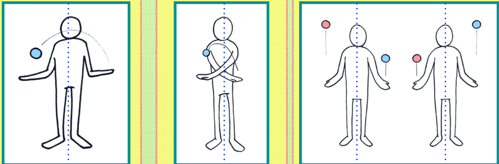</img></p>

</script></section><section data-markdown><script type="text/template"><!-- .slide: data-background-image="Bilder/blue-abstract-gradient-wave-wallpaper.jpg" -->
# Time (Synchronous)<!-- .element: style="font-size: 60px" -->
# Zeit (Synchron)<!-- .element: style="font-size: 60px; color: blue" -->
- When the frequency of interaction is mirrored or shared between both sides of our brain.
- Wenn die Frequenz der Interaktion gespiegelt oder geteilt wird zwischen beiden Seiten unseres Gehirns.<!-- .element: style="color: blue" -->
- This happens whenever interactions are initiated from both sides at the same time, such as throwing and catching two balls sideways at the same time.
- Dies geschieht immer dann, wenn Interaktionen von beiden Seiten beiden Seiten gleichzeitig initiiert werden, wie wie zum Beispiel das seitliche Werfen und Fangen von zwei Bällen zur zur gleichen Zeit.<!-- .element: style="color: blue" -->

<p style="line-height: 0" class="reset-paragraph">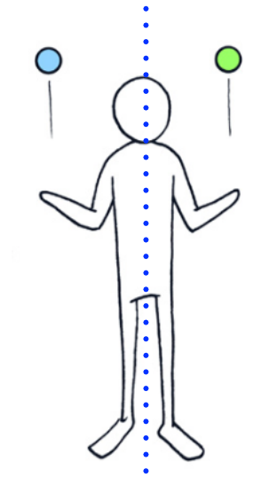</img></p>

</script></section><section data-markdown><script type="text/template">
<!-- .slide: data-background-image="Bilder/blue-abstract-gradient-wave-wallpaper.jpg" -->
# Time (Asynchronous)<!-- .element: style="font-size: 60px" -->
# Zeit (Asynchron)<!-- .element: style="font-size: 60px; color: blue" -->

- An asynchronous relationship with time means that the signals of the interactions must always alternate back and forth between the two hemispheres of the brain.
- Eine asynchrone Beziehung zur Zeit bedeutet, dass die Signale der Interaktionen immer abwechselnd zwischen den beiden Gehirnhälften hin und herwechseln muss.<!-- .element: style="color: blue" -->
- An example of this would be the same lateral throwing and catching of two balls, but at different times.
- Ein Beispiel dafür wäre das gleiche seitliche Werfen und Fangen von zwei Bällen, aber zu unterschiedlichen Zeiten.<!-- .element: style="color: blue" -->

<p style="line-height: 0" class="reset-paragraph">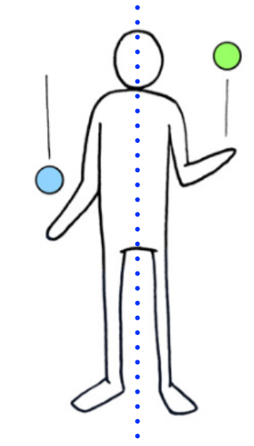</img></p>

</script></section><section data-markdown><script type="text/template">
<!-- .slide: data-background-image="Bilder/blue-abstract-gradient-wave-wallpaper.jpg" -->
# signal (associated)<!-- .element: style="font-size: 60px" -->
# Signal (assoziiert)<!-- .element: style="font-size: 60px; color: blue" -->

- Associated movements occur whenever both sides of the body express identical relationships to space. 
- Assoziierte Bewegungen treten immer dann auf, wenn beide Seiten des Körpers identische Beziehungen zum Raum ausdrücken. <!-- .element: style="color: blue" -->
- An example of this would be throwing balls between two hands, using an identical technique to control the expression of both sides.
- Ein Beispiel hierfür wäre das Werfen von Bällen zwischen zwei Händen, wobei eine identische Technik verwendet wird, um den Ausdruck beider Seiten zu steuern.<!-- .element: style="color: blue" -->

<p style="line-height: 0" class="reset-paragraph"></img></p>

</script></section><section data-markdown><script type="text/template">
<!-- .slide: data-background-image="Bilder/blue-abstract-gradient-wave-wallpaper.jpg" -->
# signal (disassociated)<!-- .element: style="font-size: 60px" -->
# Signal (dissoziiert)<!-- .element: style="font-size: 60px; color: blue" -->

- Disassociated movements occur whenever one side of the body experiences a different interaction with space than the other.
- Disassoziierte Bewegungen treten immer dann auf, wenn eine Seite des Körpers eine andere Interaktion mit dem Raum erfährt als die andere.<!-- .element: style="color: blue" -->

<p style="line-height: 0" class="reset-paragraph">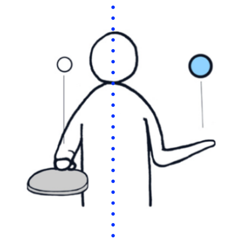</img></p>

</script></section><section data-markdown><script type="text/template">
<!-- .slide: class="drop" data-background-image="Bilder/blue-abstract-gradient-wave-wallpaper.jpg" -->
<div class="has-light-background reset-margin" style="background-color: #AAAAAA00; padding: 0px; box-sizing: border-box; position: absolute; left: 0px; top: 0px; height: 12px; min-height: 12px; width: 1920px; display: flex; flex-direction: column; align-items: center; justify-content: space-evenly" align="justify">

# tabular overview (simplified)<!-- .element: style="font-size: 60px" -->
# tabellarische übersicht (vereinfacht)<!-- .element: style="font-size: 60px; color: blue" -->
</div>

<div class="has-light-background reset-margin" style="background-color: #AAAAAA60; padding: 0px; box-sizing: border-box; position: absolute; left: 384px; top: 240px; height: 240px; min-height: 240px; width: 576px; display: flex; flex-direction: column; align-items: center; justify-content: space-evenly" align="justify">

Synchron<br>Lateral
</div>

<div class="has-light-background reset-margin" style="background-color: #AAAAAA60; padding: 0px; box-sizing: border-box; position: absolute; left: 384px; top: 600px; height: 240px; min-height: 240px; width: 576px; display: flex; flex-direction: column; align-items: center; justify-content: space-evenly" align="justify">

Synchron<br>BiLateral
</div>

<div class="has-light-background reset-margin" style="background-color: #AAAAAA60; padding: 0px; box-sizing: border-box; position: absolute; left: 998.4px; top: 240px; height: 240px; min-height: 240px; width: 576px; display: flex; flex-direction: column; align-items: center; justify-content: space-evenly" align="justify">

Asynchron<br>Lateral
</div>

<div class="has-light-background reset-margin" style="background-color: #AAAAAA60; padding: 0px; box-sizing: border-box; position: absolute; left: 998.4px; top: 600px; height: 240px; min-height: 240px; width: 576px; display: flex; flex-direction: column; align-items: center; justify-content: space-evenly" align="justify">

Asynchron<br>BiLateral
</div>

<div class="has-light-background reset-margin" style="background-color: #FFFFFF00; padding: 0px; box-sizing: border-box; position: absolute; left: 384px; top: 96px; height: 120px; min-height: 120px; width: 576px; display: flex; flex-direction: column; align-items: center; justify-content: space-evenly" align="justify">

## Synchron
</div>

<div class="has-light-background reset-margin" style="background-color: #FFFFFF00; padding: 0px; box-sizing: border-box; position: absolute; left: 998.4px; top: 96px; height: 120px; min-height: 120px; width: 576px; display: flex; flex-direction: column; align-items: center; justify-content: space-evenly" align="justify">

## ASynchron
</div>
</script></section><section data-markdown><script type="text/template">
<!-- .slide: data-background-image="Bilder/blue-abstract-gradient-wave-wallpaper.jpg" -->
# Practice (guided)<!-- .element: style="font-size: 60px" -->
# Übung (angeleitet)<!-- .element: style="font-size: 60px; color: blue" -->

- Clapping game
- Klatschspiel<!-- .element: style="color: blue" -->
- giving instructions wich of the 4 process formation patterns students should use
- Anweisungen geben, welche der 4 Formen die Schüler verwenden sollen<!-- .element: style="color: blue" -->
- students do them with clapping their hands on the body /floor
- Die Teilnehmer klatschen mit ihren Händen auf den Körper/Boden<!-- .element: style="color: blue" -->
</script></section><section data-markdown><script type="text/template"><!-- .slide: data-background-image="Bilder/blue-abstract-gradient-wave-wallpaper.jpg" -->
# Practice (Solo)<!-- .element: style="font-size: 60px" -->
# Übung (Solo)<!-- .element: style="font-size: 60px; color: blue" -->

- facilitate activity of associated process formation with 2 beanbags
- folgende einfachen Bewegungssequenzen mit 2 Bällen ausprobieren<!-- .element: style="color: blue" -->

> - Synchronous Lateral
> - Asynchronous Lateral
> - Synchronous Bi-Lateral
> - Asynchronous Bi-Lateral

> Note that for bilateral synchronous it works better to cross the arms instead of the objects. 
> 
> Beachte, dass es bei "bilateraler synchroner" Bewegung erst einmal einfacher ist, die Arme statt der Objekte zu kreuzen. <!-- .element: style="color: blue" -->
> </script></section><section data-markdown><script type="text/template">
<!-- .slide: data-background-image="Bilder/blue-abstract-gradient-wave-wallpaper.jpg" -->
# Disassociated formations<!-- .element: style="font-size: 60px" -->
# Dissoziierte Muster<!-- .element: style="font-size: 60px; color: blue" -->

> - 2 states of disassociation: objects + actions
> - 2 Zustände der Disassoziation: Objekte + Aktionen<!-- .element: style="color: blue" -->
> - disassociation of objects is the soft introduction to disassociated condition
> - Die Dissoziation von Objekten ist eine behutsame Einführung in den dissoziierten Zustand<!-- .element: style="color: blue" -->
> - (note how this was used in "cow jumps over the moon" routine)
> - (beachten Sie, wie dies in der "Kuh springt über den Mond"-Routine verwendet wurde)<!-- .element: style="color: blue" -->
> - disassociation of body action is more challenging 
> - Disassoziation von Körperbewegungen ist eine größere Herausforderung <!-- .element: style="color: blue" -->
- demonstrate and model exercise with 2 objects (rings/balls)
- Demonstration und Modellierung der Übung mit 2 Objekten (Ringe/Bälle)<!-- .element: style="color: blue" -->
</script></section><section data-markdown><script type="text/template">
<!-- .slide: data-background-image="Bilder/blue-abstract-gradient-wave-wallpaper.jpg" -->
# Process Formation Diagram
<p style="line-height: 0" class="reset-paragraph"></img></p>

</script></section><section data-markdown><script type="text/template">
<!-- .slide: data-background-image="Bilder/blue-abstract-gradient-wave-wallpaper.jpg" -->

# Static vs Dynamic Interactions<!-- .element: style="font-size: 60px" -->
# Statische vs. dynamische Interaktionen<!-- .element: style="font-size: 60px; color: blue" -->

- static means objects have no motion relative to ourself
- statisch bedeutet, dass sich Objekte relativ zu uns selbst nicht bewegen<!-- .element: style="color: blue" -->
- dynamic means objects are in motion
- dynamisch bedeutet, dass Objekte in Bewegung sind<!-- .element: style="color: blue" -->
- static interactions are easier to handle and process but the stimulation is lower
- statische Interaktionen sind einfacher zu handhaben und zu verarbeiten, aber die Stimulation ist geringer<!-- .element: style="color: blue" -->
- dynamic interactions carry information (speed, direction) and we have to get a sensory feedback
- dynamische Interaktionen enthalten Informationen (Geschwindigkeit, Richtung) und wir erhalten eine sensorische Rückmeldung<!-- .element: style="color: blue" -->
</script></section><section data-markdown><script type="text/template">
<!-- .slide: data-background-image="Bilder/blue-abstract-gradient-wave-wallpaper.jpg" -->
# Practice: Sensory Feedback<!-- .element: style="font-size: 60px" -->
# Übung: Sensorische Rückmeldung<!-- .element: style="font-size: 60px; color: blue" -->

Activity : Push Stick 

> - exchanged objects carry and receive information that informs us about energy contained within these objects
> - dynamisch ausgetauschte Objekte beinhalten Informationen (in Form von Energie)<!-- .element: style="color: blue" -->

- relate back to exchange of objects in space
- Rückbezug auf den Austausch von Objekten im Raum<!-- .element: style="color: blue" -->
- we apply a force and direction to an object to create motion
- wir üben eine Kraft und eine Richtung auf ein Objekt aus, um eine Bewegung zu erzeugen<!-- .element: style="color: blue" -->
- as the object contacts our body we receive this information (speed, direction)
- Wenn das Objekt unseren Körper berührt, erhalten wir diese Informationen (Geschwindigkeit, Richtung)<!-- .element: style="color: blue" -->
- challenging the force dilutes this information
- Wenn wir diese Energie nicht annehmen, wird die Information verwässert.<!-- .element: style="color: blue" -->
- accepting the force with responsive flexibility allows it to be interpreted
- Wenn wir die Kraft mit einer gewissen Flexibilität annehmen, kann sie interpretiert werden.<!-- .element: style="color: blue" -->
</script></section><section data-markdown><script type="text/template">
<!-- .slide: data-background-image="Bilder/blue-abstract-gradient-wave-wallpaper.jpg" -->
> The same manner of information / communication that is present in direct contact (push stick example) is also found in objects moving through space
> 
> Die gleiche Art der Information/Kommunikation wie bei direktem Kontakt findet sich auch bei Objekten, die sich durch den Raum bewegen.<!-- .element: style="color: blue" -->
</script></section><section data-markdown><script type="text/template">
<!-- .slide: data-background-image="Bilder/blue-abstract-gradient-wave-wallpaper.jpg" -->
# Functional Integration<!-- .element: style="font-size: 60px" -->
# Funktionale Integration<!-- .element: style="font-size: 60px; color: blue" -->
- by replacing our actions with something like pouring cups of water or drawing with crayons we can transform the beneficial outcomes into new fields of therapeutic practice
- indem wir unsere Handlungen durch etwas wie das Ausgießen von Wasser oder das Malen mit Buntstiften ersetzen, können wir die positiven Ergebnisse in neue Bereiche der therapeutischen Praxis umwandeln<!-- .element: style="color: blue" -->
- this type of play lends itself to non-verbal communication wich plays a critical role in accessibility
- diese Art des Spiels eignet sich für die nonverbale Kommunikation, die eine entscheidende Rolle für die Zugänglichkeit spielt<!-- .element: style="color: blue" -->
- this idea of functional integration is beneficial for many different industries that are interested in repetition / time-on-task
- Diese Idee der funktionalen Integration ist für viele verschiedene Branchen von Vorteil, die an Wiederholungen (von Übungen) interessiert sind.<!-- .element: style="color: blue" -->
</script></section><section data-markdown><script type="text/template">
<!-- .slide: data-background-image="Bilder/blue-abstract-gradient-wave-wallpaper.jpg" -->
# demonstration of ideas<!-- .element: style="font-size: 60px" -->
<iframe width="1900" height="1000" src="https://www.youtube.com/embed/zFPsr1L13Vs" title="YouTube video player" frameborder="0" allow="accelerometer; autoplay; clipboard-write; encrypted-media; gyroscope; picture-in-picture" allowfullscreen></iframe>
</script></section><section data-markdown><script type="text/template">
<!-- .slide: data-background-image="Bilder/blue-abstract-gradient-wave-wallpaper.jpg" -->
# Practice 1: Process Formations<!-- .element: style="font-size: 60px" -->
# Übung 1: "Process Formations"<!-- .element: style="font-size: 60px; color: blue" -->

- in pairs of two, go through adapted forms of process formations
- in Zweiergruppen verschiedene Varianten der "Process Formations" durchspielen<!-- .element: style="color: blue" -->
- the goal is to stimulate the sequencing of events, not the technical actions / challenges
- das Ziel ist es, die Abfolge der Handlungen zu stimulieren, nicht die technische Herausforderungen<!-- .element: style="color: blue" -->
- using a mixed selection of objects (diabolo, flowersticks, plates etc.)
- Verwendung einer gemischten Auswahl von Gegenständen (Diabolo, Flowersticks, Teller usw.)<!-- .element: style="color: blue" -->
- introduce tempo by dropping, rolling or tossing objects
- Einführung des Tempos durch Fallenlassen, Rollen oder Werfen von Gegenständen<!-- .element: style="color: blue" -->
- explore variable tempo 
- Erkundung unterschiedlicher Tempi <!-- .element: style="color: blue" -->
</script></section><section data-markdown><script type="text/template">
<!-- .slide: data-background-image="Bilder/blue-abstract-gradient-wave-wallpaper.jpg" -->
# Practice 2: Disassociation<!-- .element: style="font-size: 60px" -->
# Übung 2: Dissoziation<!-- .element: style="font-size: 60px; color: blue" -->

- working solo
- alleine arbeiten<!-- .element: style="color: blue" -->
- explore disassociated sequences of primary process formations
- disassoziierte Sequenzen von verschiedenen "Process Formations" erproben<!-- .element: style="color: blue" -->
 - 1: with different objects but similar techniques
 - 1: mit unterschiedlichen Objekten, aber ähnlichen Techniken<!-- .element: style="color: blue" -->
 - 2: with same objects but different techniques
 - 2: mit gleichen Objekten, aber unterschiedlichen Techniken<!-- .element: style="color: blue" --></script></section><section data-markdown><script type="text/template">
<!-- .slide: data-background-image="Bilder/blue-abstract-gradient-wave-wallpaper.jpg" -->
# Practice 3 : everyday objects<!-- .element: style="font-size: 60px" -->
# Übung 3 : Alltagsgegenstände<!-- .element: style="font-size: 60px; color: blue" -->

- explore sequences of primary process formation with everyday objects
- Sequenzen der "process formations" mit Alltagsgegenständen erforschen<!-- .element: style="color: blue" -->
- only static interaction
- nur statische Interaktion<!-- .element: style="color: blue" -->
- bonus for narrative play
- Bonus für narratives Spiel<!-- .element: style="color: blue" -->
</script></section><section data-markdown><script type="text/template">
<!-- .slide: data-background-image="Bilder/blue-abstract-gradient-wave-wallpaper.jpg" -->
# Arrangements<!-- .element: style="font-size: 60px" -->
# Anordnungen<!-- .element: style="font-size: 60px; color: blue" -->

- In order to be orbital, each event must be able to travel back-and-forth between at least two points in space. 
- Um als Kreislauf zu gelten, muss jedes Ereignis zwischen mindestens zwei Punkten im Raum hin- und herwandern können. <!-- .element: style="color: blue" -->
- Under the principle that juggling is intended to be “managed,” at least one of these points must be connected to the interactions of a juggler. 
- Nach dem Prinzip, dass Jonglieren " gesteuert " werden soll, muss mindestens einer dieser Punkte mit den Interaktionen einer Person verbunden sein. <!-- .element: style="color: blue" -->
- Based on this outcome, we can deduce that there are only three ways to structure the arrangements of our interactions with orbital events: solo, social, and mixed.
- Daraus können wir folgern, dass es nur drei Möglichkeiten gibt, unsere Interaktionen mit orbitalen Ereignissen zu strukturieren: solo, sozial und gemischt.<!-- .element: style="color: blue" -->
</script></section><section data-markdown><script type="text/template">
<!-- .slide: data-background-image="Bilder/blue-abstract-gradient-wave-wallpaper.jpg" -->
# Solo Arrangements<!-- .element: style="font-size: 60px" -->
# Solo-Anordnungen<!-- .element: style="font-size: 60px; color: blue" -->

- Solo arrangements structure their interactions within a closed system of experience. 
- Solo-Arrangements strukturieren ihre Interaktionen innerhalb eines geschlossenen Systems von Erlebnissen. <!-- .element: style="color: blue" -->
- Meaning that their events are managed, and thereby experienced, exclusively by one person. 
- Das bedeutet, dass ihre Handlungen ausschließlich von einer Person gesteuert und damit erlebt werden. <!-- .element: style="color: blue" -->
- Since the activity is managed independently, all of its sensory information is both produced and processed by the same individual
- Da die Aktivität eigenständig gesteuert wird, werden alle sensorischen Informationen von ein und derselben Person erzeugt und verarbeitet.<!-- .element: style="color: blue" -->

<p style="line-height: 0" class="reset-paragraph"></img></p>

</script></section><section data-markdown><script type="text/template">
<!-- .slide: data-background-image="Bilder/blue-abstract-gradient-wave-wallpaper.jpg" -->
# Social Arrangements<!-- .element: style="font-size: 60px" -->
# Soziale Anordnungen<!-- .element: style="font-size: 60px; color: blue" -->

- Social Arrangements structure their interactions within shared systems of experience. 
- Soziale Arrangements strukturieren ihre Interaktionen innerhalb gemeinsamer Erfahrungsräume. <!-- .element: style="color: blue" -->
- Meaning that their interactions with orbital events are experienced collectively by two or more people.
- Das bedeutet, dass die Interaktionen mit orbitalen Ereignissen von zwei oder mehr Personen gemeinsam erlebt werden.<!-- .element: style="color: blue" -->

<p style="line-height: 0" class="reset-paragraph"></img></p>

</script></section><section data-markdown><script type="text/template">
<!-- .slide: data-background-image="Bilder/blue-abstract-gradient-wave-wallpaper.jpg" -->
# Mixed Arrangements<!-- .element: style="font-size: 60px" -->
# Gemischte Anordnungen<!-- .element: style="font-size: 60px; color: blue" -->

- Mixed Arrangements structure their interactions within a combined system of experiences. 
- Gemischte Arrangements strukturieren ihre Interaktionen innerhalb eines kombinierten Systems von Erfahrungsräumen. <!-- .element: style="color: blue" -->
- Meaning that some of their interactions are managed individually, while others are managed in cooperation. Basically, it forms a combination between the two styles of solo and social arrangements.
- Das bedeutet, dass einige ihrer Interaktionen individuell gehandhabt werden, während andere in Kooperation gehandhabt werden. (Kombination aus Einzel- und sozialen Arrangements)<!-- .element: style="color: blue" -->
- it requires us to divide our attention between different points of incoming information.
- Es verlangt von uns, dass wir unsere Aufmerksamkeit auf verschiedene Punkte eingehender Informationen aufteilen.<!-- .element: style="color: blue" -->

<p style="line-height: 0" class="reset-paragraph"></img></p>

</script></section><section data-markdown><script type="text/template">
<!-- .slide: data-background-image="Bilder/blue-abstract-gradient-wave-wallpaper.jpg" -->
# Process Formation Theory (Summary)<!-- .element: style="font-size: 60px" -->
# "Process Formation" - Zusammenfassung<!-- .element: style="font-size: 60px; color: blue" -->

- Process Formations are calculated map of complexity and quantity of bi-lateral cognitive sequence signals.
- "Process Formations" sind eine geordnete Tabelle der Komplexität und Quantität von bilateralen kognitiven Sequenz-Signalen.<!-- .element: style="color: blue" -->
- This determines the cognitive challenge of juggling sequences and represent the core conditions of exercise (to cause brain mass increase)
- Diese zeigen die kognitiven Herausforderungen von Bewegungsabläufen und stellen die grundlegenden Rahmenbedingungen des Trainings dar<!-- .element: style="color: blue" -->
</script></section></section><section ><section data-markdown><script type="text/template">
<!-- .slide: data-background-image="Bilder/blue-abstract-gradient-wave-wallpaper.jpg" -->
# Part 4: Spatial Sequencing Maps<!-- .element: style="font-size: 60px" -->
# Teil 4: Karte der räumlichen Anordnung<!-- .element: style="font-size: 60px; color: blue" -->

<p style="line-height: 0" class="reset-paragraph">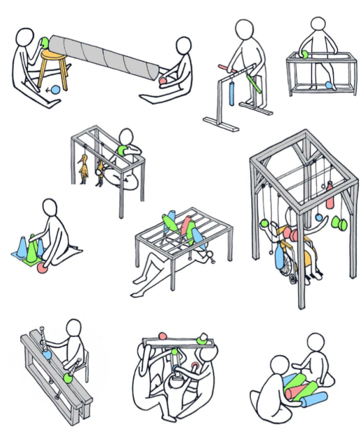</img></p>


- The maps of spatial arrangement are meant to indicate where and when our interactions with space occur, but do not specify anything about how they must be done.
- Die Karten der räumlichen Anordnung geben an, wo und wann unsere Interaktionen mit dem Raum stattfinden, legen aber nichts über die Art und Weise fest, in der sie durchgeführt werden müssen.<!-- .element: style="color: blue" -->
</script></section><section data-markdown><script type="text/template">
<!-- .slide: data-background-image="Bilder/blue-abstract-gradient-wave-wallpaper.jpg" -->
# 2 Points

- we start with the minimum amount of points in space to represent all our interactions in terms of the process formation.
- beginnen wir mit der minimalen Anzahl von Punkten im Raum, um alle unsere Interaktionen in Bezug auf die Bewegungssequenzen darzustellen.<!-- .element: style="color: blue" -->

<p style="line-height: 0" class="reset-paragraph"></img></p>

</script></section><section data-markdown><script type="text/template">
<!-- .slide: data-background-image="Bilder/blue-abstract-gradient-wave-wallpaper.jpg" -->
# 3 points
- to be able to more clearly differentiate, we introduce a mid-point
- um besser differenzieren zu können, führen wir einen Mittelpunkt ein<!-- .element: style="color: blue" -->
- these 3 points are enough to represent most juggling activities
- diese 3 Punkte reichen aus, um die meisten Jonglieraktivitäten darzustellen<!-- .element: style="color: blue" -->

<p style="line-height: 0" class="reset-paragraph"></img></p>

</script></section><section data-markdown><script type="text/template">
<!-- .slide: data-background-image="Bilder/blue-abstract-gradient-wave-wallpaper.jpg" -->
# 5 Points
- practice has shown that with 5 points, we are able to use the entire spectrum of our relationships with space and time
- die Praxis hat gezeigt, dass wir mit 5 Punkten das gesamte Spektrum unserer Beziehungen zu Raum und Zeit nutzen können<!-- .element: style="color: blue" -->
- most commonly these are arranged in a horizontal line to make them more accessible
- Meistens werden sie in einer horizontalen Linie angeordnet, um sie leichter zugänglich zu machen.<!-- .element: style="color: blue" -->
- 
<p style="line-height: 0" class="reset-paragraph"></img></p>

</script></section><section data-markdown><script type="text/template">
<!-- .slide: class="drop" data-background-image="Bilder/blue-abstract-gradient-wave-wallpaper.jpg" -->
# Arrangements

- Spatial sequencing maps are intended to indicate where and when our interactions will occur, but do not determine anything about the manner in which they should be expressed.
- Die Karten der räumlichen Anordnung sollen aufzeigen, wo und wann unsere Interaktionen stattfinden, legen aber nichts über die Art und Weise fest, wie sie zum Ausdruck gebracht werden sollen.<!-- .element: style="color: blue" -->
- the smallest amount of points needed to be able to stimulate our entire spectrum of binary relationships is five
- Die kleinste Anzahl von Punkten, die benötigt wird, um unser gesamtes Spektrum an binären Beziehungen zu stimulieren, ist fünf.<!-- .element: style="color: blue" -->
- The Juggle Board is one way to represent the concepts of a five point spatial sequencing map, however, it is not the only way we have to manifest such environments.
- Das Jonglierbrett ist eine Möglichkeit, die Konzepte einer räumlichen Sequenzkarte mit fünf Punkten darzustellen, aber es ist nicht die einzige Möglichkeit, die wir haben, um solche Umgebungen zu manifestieren.<!-- .element: style="color: blue" -->

<p style="line-height: 0" class="reset-paragraph">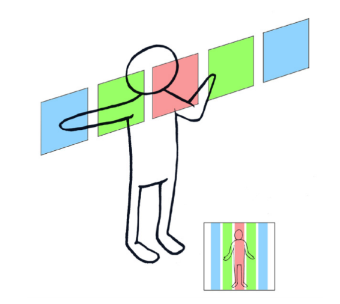</img></p>


</script></section><section data-markdown><script type="text/template">
# Arrangement of points in space
# Anordnung im Raum<!-- .element: style="color: blue" -->
<!-- .slide: class="drop" data-background-image="Bilder/blue-abstract-gradient-wave-wallpaper.jpg" -->
- Most often, for simplicity, these points are arranged in a horizontal plane to make their interaction more accessible. 
- Meistens werden diese Punkte zur Vereinfachung in einer horizontalen Ebene angeordnet, um ihre Interaktion leichter zugänglich zu machen. <!-- .element: style="color: blue" -->
- However, it is also possible to arrange them in any height (y), depth (z) or width (x).
- Es ist jedoch auch möglich, sie in beliebig in Höhe (y), Tiefe (z) oder Breite (x) anzuordnen.<!-- .element: style="color: blue" -->

<p style="line-height: 0" class="reset-paragraph">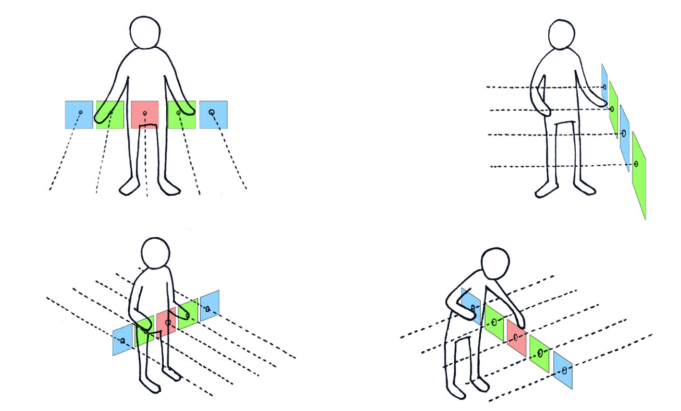</img></p>


<p style="line-height: 0" class="reset-paragraph"></img></p>

</script></section><section data-markdown><script type="text/template">
# Examples
<!-- .slide: class="drop" data-background-image="Bilder/blue-abstract-gradient-wave-wallpaper.jpg" -->
<div class="has-light-background reset-margin" style="background-color: #AAAAAA60; padding: 0px; box-sizing: border-box; position: absolute; left: 288px; top: 120px; height: 60px; min-height: 60px; width: 576px; display: flex; flex-direction: column; align-items: center; justify-content: space-evenly" align="justify">

x-axis
</div>
<p style="line-height: 0" class="reset-paragraph">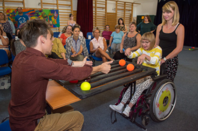</img></p>

<div class="has-light-background reset-margin" style="background-color: #AAAAAA60; padding: 0px; box-sizing: border-box; position: absolute; left: 288px; top: 600px; height: 60px; min-height: 60px; width: 576px; display: flex; flex-direction: column; align-items: center; justify-content: space-evenly" align="justify">

y-axis
</div>
<p style="line-height: 0" class="reset-paragraph">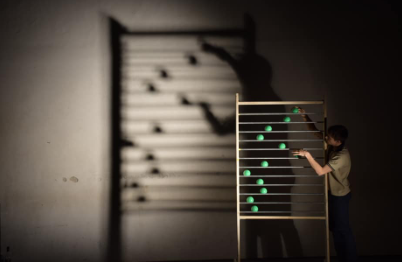</img></p>

<div class="has-light-background reset-margin" style="background-color: #AAAAAA60; padding: 0px; box-sizing: border-box; position: absolute; left: 1056px; top: 120px; height: 60px; min-height: 60px; width: 576px; display: flex; flex-direction: column; align-items: center; justify-content: space-evenly" align="justify">

z-axis
</div>
<p style="line-height: 0" class="reset-paragraph">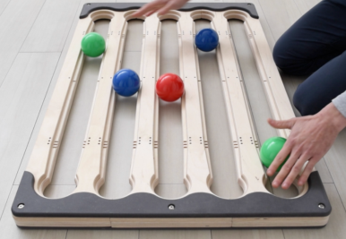</img></p>

<div class="has-light-background reset-margin" style="background-color: #AAAAAA60; padding: 0px; box-sizing: border-box; position: absolute; left: 1056px; top: 600px; height: 60px; min-height: 60px; width: 576px; display: flex; flex-direction: column; align-items: center; justify-content: space-evenly" align="justify">

multiple axis
</div>
<p style="line-height: 0" class="reset-paragraph">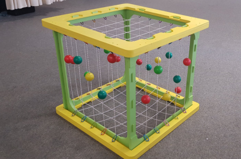</img></p>

</script></section><section data-markdown><script type="text/template">
<!-- .slide: data-background-image="Bilder/blue-abstract-gradient-wave-wallpaper.jpg" -->
# Practice: Synchronous Lateral

- Experiment with 5 points arranged along the x-axis and explore the different sequencing possibilities of this arrangement. 
- Experimentieren Sie mit 5 entlang der x-Achse angeordneten Punkten und erkunden Sie die verschiedenen Sequenzierungsmöglichkeiten dieser Anordnung. <!-- .element: style="color: blue" -->
- Use only static movements for your interactions, and look for as many synchronous lateral combinations as you can find.
- Verwenden Sie nur statische Bewegungen für Ihre Interaktionen, und suchen Sie nach so vielen synchronen lateralen Kombinationen, wie Sie finden können.<!-- .element: style="color: blue" -->
</script></section><section data-markdown><script type="text/template">
<!-- .slide: data-background-image="Bilder/blue-abstract-gradient-wave-wallpaper.jpg" -->
# Practice 2: process formations

- After playing with some of these sequences, try applying the theory of "Process Formations" to these patterns:
- Nachdem Sie mit einigen dieser Sequenzen gespielt haben, versuchen Sie, die Theorie der “Process Formations” auf diese Muster anzuwenden:<!-- .element: style="color: blue" -->

| 1   | 2  |  3  | 4
| --- | --- | --- |---
Synchron | Asynchron | Synchron| Asynchron  
Lateral | Lateral| Bilateral | Bilateral
</script></section></section><section ><section data-markdown><script type="text/template">
<!-- .slide: data-background-image="Bilder/blue-abstract-gradient-wave-wallpaper.jpg" -->
# Part 5 : Prop Swap Notation + Juggleboard
</script></section><section data-markdown><script type="text/template">
<!-- .slide: data-background-image="Bilder/blue-abstract-gradient-wave-wallpaper.jpg" -->
# Das Juggleboard

- The Juggleboard is one way to represent the concepts of a five-point spatial arrangement; however, it is not the only way we have to realize such environments. 
- Das Juggleboard ist eine Möglichkeit, die Konzepte einer fünf Punkte umfassenden räumlichen Anordnung darzustellen; es ist jedoch nicht die einzige Möglichkeit, die wir haben, um solche Umgebungen zu realisieren. <!-- .element: style="color: blue" -->
- Although we will be working primarily with this device, it is good to know that these concepts themselves are not exclusive to one device, but rather are meant to be transferable.
- Obwohl wir hauptsächlich mit diesem Gerät arbeiten werden, ist es gut zu wissen, dass diese Konzepte selbst nicht exklusiv für ein Gerät sind, sondern vielmehr übertragbar sein sollen.<!-- .element: style="color: blue" -->

<p style="line-height: 0" class="reset-paragraph">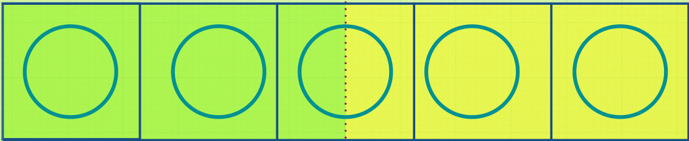</img></p>

</script></section><section data-markdown><script type="text/template">
<!-- .slide: class="drop" data-background-image="Bilder/blue-abstract-gradient-wave-wallpaper.jpg" -->
<div class="has-dark-background reset-margin" style="background-color: #FF000000; padding: 00px; box-sizing: border-box; position: absolute; left: 0px; top: 0px; height: 1200px; min-height: 1200px; width: 1920px; display: flex; flex-direction: column; align-items: center; justify-content: space-evenly" align="justify">

<p style="line-height: 0" class="reset-paragraph"></img></p>

</div>

# Demonstration
- demo of primary composition with a participant
- Demonstration der "Primary Composition" mit einem Teilnehmer<!-- .element: style="color: blue" -->
- conversation about how it went and what the group observed
- Gespräch darüber, wie es gelaufen ist und was die Gruppe beobachtet hat<!-- .element: style="color: blue" -->
- focus on non-verbal element, how the process is guided
- Fokus auf nonverbale Elemente, wie der Prozess gesteuert wird<!-- .element: style="color: blue" -->
- typical reactions to the first roll and what that might indicate about the persons personality and perspective of learning
- Typische Reaktionen auf die erste Interaktion und was das über die Persönlichkeit und die Lernperspektive der Person aussagen könnte<!-- .element: style="color: blue" --></script></section><section data-markdown><script type="text/template">
<!-- .slide: data-background-image="Bilder/blue-abstract-gradient-wave-wallpaper.jpg" -->
# Prop Swap Notation

- Propswap is a notation system that allows us to describe the different sequencing activities
- Propswap ist ein Notationssystem, das es uns erlaubt, die verschiedenen Sequenzierungsaktivitäten zu beschreiben<!-- .element: style="color: blue" -->
- The notation works by assigning integers to each of the five spatial points in our array.
- Die Notation funktioniert durch die Zuweisung von ganzen Zahlen zu jedem der fünf räumlichen Punkte unserer Anordnung.<!-- .element: style="color: blue" -->
- Each number represents a new interaction, and assumes that there is always alternating interaction with the right and left sides of the body.
- Jede Zahl steht für eine neue Interaktion, und nimmt an, dass immer abwechselnd mit der rechten und der linken Körperseite interagiert wird.<!-- .element: style="color: blue" -->

<p style="line-height: 0" class="reset-paragraph">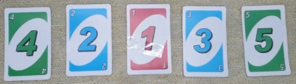</img></p>


</script></section><section data-markdown><script type="text/template">
<!-- .slide: data-background-image="Bilder/blue-abstract-gradient-wave-wallpaper.jpg" -->
# Forward / Horizontal Arrangements
<p style="line-height: 0" class="reset-paragraph"></img></p>


- for forward arrangements the numbers 1-5 are used
- für vorwärts gerichtete Arrangements werden die Nummern 1-5 verwendet<!-- .element: style="color: blue" -->
- for horizontal arrangements the latters A-E er used
- für horizontale Arrangements werden die Ziffern A-E verwendet<!-- .element: style="color: blue" -->
- this way its easy recognizable wich orientation the pattern is meant to be played in
- auf diese Weise ist leicht erkennbar, in welcher Richtung das Muster gespielt werden soll<!-- .element: style="color: blue" -->
- </script></section><section data-markdown><script type="text/template">
<!-- .slide: data-background-image="Bilder/blue-abstract-gradient-wave-wallpaper.jpg" -->
# Time
# Zeit<!-- .element: style="color: blue" -->

- we read the pattern from left to right
- wir lesen das Muster von links nach rechts<!-- .element: style="color: blue" -->
- each number represents an event in time
- jede Zahl steht für ein Ereignis in der Zeit<!-- .element: style="color: blue" -->
- every event assumes to alternate between the left and right (hand)
- jedes Ereignis nimmt an, dass es zwischen der linken und rechten (Hand) wechselt<!-- .element: style="color: blue" -->

<p style="line-height: 0" class="reset-paragraph"></img></p>

</script></section><section data-markdown><script type="text/template">
<!-- .slide: class="drop" data-background-image="Bilder/blue-abstract-gradient-wave-wallpaper.jpg" -->
# Periods / Perioden

- The period of notation is the amount of integers which are included in one full, non-repeating, segment of its sequence.
- Die Periode der Notation ist die Anzahl der ganzen Zahlen, die in einem vollständigen, sich nicht wiederholenden Abschnitt enthalten sind<!-- .element: style="color: blue" -->
- Even period notations require only one repetition of their segment in order to complete their cycle, whereas odd period notations require multiple.
- Notationen mit gerader Periode erfordern nur eine Wiederholung ihres Segments, um ihren Durchlauf abzuschließen, während Notationen mit ungerader Periode mehrere Wiederholungen erfordern.<!-- .element: style="color: blue" -->
- sometimes we add an * with those odd periods, this is just to remind us of this increased challenge level
- Manchmal fügen wir bei den ungeraden Perioden ein * hinzu, um uns an das erhöhte Schwierigkeitsniveau zu erinnern.<!-- .element: style="color: blue" -->

<p style="line-height: 0" class="reset-paragraph"></img></p>

</script></section><section data-markdown><script type="text/template">
<!-- .slide: data-background-image="Bilder/blue-abstract-gradient-wave-wallpaper.jpg" -->
# Starting Positions (Vertical)
<p style="line-height: 0" class="reset-paragraph"></img></p>

</script></section><section data-markdown><script type="text/template">
<!-- .slide: data-background-image="Bilder/blue-abstract-gradient-wave-wallpaper.jpg" -->
# Starting Positions (Horizontal)
<p style="line-height: 0" class="reset-paragraph"></img></p>

- For horizontal arrangements, each letter represents one sequencing point for either side of the body, so we are not able to determine its start position simply by the order of its notation alone. We resolve this issue by applying the settings of asynchronous time, and lateral initiation, from the start. This allows horizontal notations to be set according to either side of the body, so long as the ordered laws of its notation are preserved.
- Bei horizontalen Anordnungen repräsentiert jeder Buchstabe einen Sequenzierungspunkt für jede Seite des Körpers, so dass wir nicht in der Lage sind, die Startposition allein durch die Reihenfolge der Notation zu bestimmen. Wir lösen dieses Problem, indem wir die Vorgaben der asynchronen Zeit und des lateralen Beginns von Anfang an anwenden. Auf diese Weise kann die horizontale Notation für beide Seiten des Körpers festgelegt werden, solange die  Gesetze der Notation beibehalten werden.<!-- .element: style="color: blue" -->
</script></section><section data-markdown><script type="text/template">
<!-- .slide: data-background-image="Bilder/blue-abstract-gradient-wave-wallpaper.jpg" -->
# States of orbital interaction
## Fixed State

<p style="line-height: 0" class="reset-paragraph"></img></p>

- Fixed-state interactions represent a form of relationship with orbital events in which their pathway through space is arranged directly in between two points. Meaning that their orbits are linear and follow a single path of motion, as they travel back-and-forth, in both directions.
- Bei Mustern im "Fixed State" ist die Bahn der Objekte direkt zwischen zwei Punkten angeordnet. Das bedeutet, dass die Umlaufbahnen linear sind und einem einzigen Pfad folgen, während sie sich in beide Richtungen hin und her bewegen.<!-- .element: style="color: blue" -->
- </script></section><section data-markdown><script type="text/template">
<!-- .slide: data-background-image="Bilder/blue-abstract-gradient-wave-wallpaper.jpg" -->
# Open State
<p style="line-height: 0" class="reset-paragraph"></img></p>

- objects use multiple lanes for the whole orbit
- Objekte nutzen mehrere Bahnen für die gesamte Umlaufbahn<!-- .element: style="color: blue" -->
- more objects can fit into the patterns, as the are not interfering/blocking each other
- mehr Objekte können in die Muster passen, da sie sich nicht gegenseitig stören/blockieren<!-- .element: style="color: blue" -->
- more complex and harder to do, both technically as also visually
- komplexer und schwieriger zu realisieren, sowohl technisch als auch visuell<!-- .element: style="color: blue" -->
- increased sequencing challenge
- erhöhte Herausforderung bei der Sequenzierung / Bewegungsplanung<!-- .element: style="color: blue" -->
</script></section><section data-markdown><script type="text/template">
<!-- .slide: data-background-image="Bilder/blue-abstract-gradient-wave-wallpaper.jpg" -->
# Mixed State

<p style="line-height: 0" class="reset-paragraph"></img></p>

- these patterns merge fixed and open state patterns into one
- diese Muster verbinden feste und offene Muster<!-- .element: style="color: blue" -->
- even more challenging, hard to communicate the pattern non-verbally
- noch schwieriger, das Muster ist nonverbal schwerer zu vermitteln<!-- .element: style="color: blue" --></script></section><section data-markdown><script type="text/template">
<!-- .slide: class="drop" data-background-image="Bilder/blue-abstract-gradient-wave-wallpaper.jpg" -->
# What does the numbers represent
# Was bedeuten die Nummern

- The integers indicates that some form of interaction with its location should occur at that time. In the context of the Juggle Board, we express this kind of relationship by the rolling of balls back-and-forth, in between two points. This can be achieved by exchanging objects between two partners, or by raising one side of the Juggle Board slightly higher than the other, so that each ball is able to roll back to us on its own.
- Die Zahlen zeigen an, dass zu diesem Zeitpunkt eine Form der Interaktion mit diesem Ort stattfinden soll.  Dies kann durch den Austausch von Gegenständen zwischen zwei Partnern oder durch das Anheben einer Seite des Jonglierbretts erreicht werden, so dass jeder Ball von selbst zu uns zurückrollen kann.<!-- .element: style="color: blue" -->

<p style="line-height: 0" class="reset-paragraph"></img></p>

</script></section><section data-markdown><script type="text/template">
<!-- .slide: data-background-image="Bilder/blue-abstract-gradient-wave-wallpaper.jpg" -->
# Fixed State Notation
## Asynchronous Lateral

- integers are read one after the other, i.e. 2345 occurs like 2 - 3 - 4 - 5
- ganze Zahlen werden nacheinander gelesen, d.h. 2345 liest sich wie 2 - 3 - 4 - 5<!-- .element: style="color: blue" -->
- structure learning by first touching the balls and then by rolling
- strukturiertes Lernen durch Berühren der Kugeln und anschließendes Rollen<!-- .element: style="color: blue" -->

```
.
- 2345
- 
- 23412315
- 
- 4325
- 
- 4235
.
```
</script></section><section data-markdown><script type="text/template">
<!-- .slide: data-background-image="Bilder/blue-abstract-gradient-wave-wallpaper.jpg" -->
## Synchronous Lateral

- paranthesis around numbers means that those events happen at the same time
- Die runden Klammern um die Zahlen bedeuten, dass diese Ereignisse zur gleichen Zeit stattfinden.<!-- .element: style="color: blue" -->

```
.
- (23)(45)
- 
- (23)(41)(23)(15)
- 
- (43)(25)
- 
- (42)(35)
.
```
</script></section><section data-markdown><script type="text/template">
<!-- .slide: data-background-image="Bilder/blue-abstract-gradient-wave-wallpaper.jpg" -->
## Asynchronous Bilateral

- sequences in which every beat alternates from side-to-side, and each beat crosses or exchanges its spatial information, bilaterally, from one side to the other. This type of notation is indicated by the use of an x symbol followed by a period (x.), placed prior to the start of its notation. In general the x symbol is used to instruct the changing from lateral to bilateral or vice versa.
- Sequenzen, in denen jeder Takt von einer Seite zur anderen wechselt und jeder Takt seine räumliche Information bilateral von einer Seite zur anderen kreuzt oder austauscht. Diese Art der Notation wird durch die Verwendung eines x-Symbols gekennzeichnet, gefolgt von einem Punkt (x.), der vor dem Beginn der Notation steht. Im Allgemeinen wird das x-Symbol verwendet, um den Wechsel von lateral zu bilateral oder umgekehrt anzukündigen.<!-- .element: style="color: blue" -->
</script></section><section data-markdown><script type="text/template">
<!-- .slide: data-background-image="Bilder/blue-abstract-gradient-wave-wallpaper.jpg" -->
## Asynchronous Bilateral Patterns

```
.
- x.2345
- 
- x.23412315
- 
- 42135*
- 
- 45231*
.
```
</script></section><section data-markdown><script type="text/template">
<!-- .slide: data-background-image="Bilder/blue-abstract-gradient-wave-wallpaper.jpg" -->
# Synchronous Bilateral 

- The general idea is that whichever integer appears first, is always assumed to be positioned above that of the other. So for example, the notation of (x21. indicates that the side of the body which is responsible for managing the 2, should be positioned above that of the 3. Whereas in the example of (x32), it is the 3 which is positioned above that of the 2<!-- .element: class="fragment" data-fragment-index="1" -->
- Im Allgemeinen wird davon ausgegangen, dass diejenige ganze Zahl, die zuerst erscheint, immer über der anderen steht. So bedeutet beispielsweise die Schreibweise von (x23), dass die Seite des Körpers, die für die Handhabung der 2 zuständig ist, über der der 3 stehen sollte, während im Beispiel von (x31. die 3 über der 2 steht.<!-- .element: style="color: blue" class="fragment" data-fragment-index="2" -->

<p style="line-height: 0" class="reset-paragraph"></img></p>

</script></section><section data-markdown><script type="text/template">
<!-- .slide: data-background-image="Bilder/blue-abstract-gradient-wave-wallpaper.jpg" -->
# Synchronous Bilateral Patterns

- An x at the beginning of a notation indicates that its interaction should be performed bilaterally; however, an additional x positioned at the end of the same notation, would require its interaction to change or revert back to its previous condition.
- Ein x am Anfang einer Notation zeigt an, dass die Interaktion beidseitig erfolgen sollte; ein zusätzliches x am Ende derselben Notation würde jedoch bedeuten, dass die Interaktion sich ändert oder zu ihrem vorherigen Zustand zurückkehrt.<!-- .element: style="color: blue" -->

```
.
- (x23x)(x54x)
- 
- (x23x)(x14x)(x23x)(x51x)
- 
- (x43x)(x52x)
- 
- (x42x)(x53x)
.
```
</script></section><section data-markdown><script type="text/template">
# Writing Exercise
- check 1:00:38 of group2 class3 video

</script></section></section><section ><section data-markdown><script type="text/template">
<!-- .slide: data-background-image="Bilder/blue-abstract-gradient-wave-wallpaper.jpg" -->
# Part 6 : Primary Composition
- its intend is to structure the cognitive outcomes of its developments,
so that they occur most naturally and without resistance
- das Ziel ist es die kognitiven Ergebnisse ihrer Aktivitäten so zu strukturieren, dass sie möglichst natürlich und ohne Widerstand ablaufen<!-- .element: style="color: blue" -->
- utilises a structure of five base patterns, which are meant to represent the widest possible range of our binary sequencing relationships
- verwendet eine Struktur aus fünf Grundmustern, die die größtmögliche Bandbreite unserer binären Sequenzierungsbeziehungen repräsentiert<!-- .element: style="color: blue" -->

<p style="line-height: 0" class="reset-paragraph">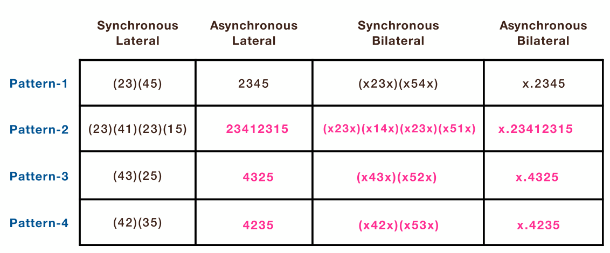</img></p>

</script></section><section data-markdown><script type="text/template">
<!-- .slide: data-background-image="Bilder/blue-abstract-gradient-wave-wallpaper.jpg" -->
# Pattern 1: (23)(45)
- most simplified form
- einfachste Form<!-- .element: style="color: blue" -->
- similar to a 4 ball fountain pattern
- ähnlich wie ein 4-Ball-Fontänenmuster<!-- .element: style="color: blue" -->

<p style="line-height: 0" class="reset-paragraph"></img></p>

</script></section><section data-markdown><script type="text/template">
<!-- .slide: data-background-image="Bilder/blue-abstract-gradient-wave-wallpaper.jpg" -->
# Pattern 2: (23)(41)(23)(51) 

- includes additional 2 beats
- enthält zusätzlich 2 Takte<!-- .element: style="color: blue" -->
- intended to encourage equal amounts of spatial sharing between both sides of the body
- soll eine gleichmäßige Nutzung des Raumes durch beide Körperhälften fördern<!-- .element: style="color: blue" -->
- gets the hands to the midline, prepares bilateral patterns
- bringt die Hände zur Mittellinie, bereitet bilaterale Muster vor<!-- .element: style="color: blue" -->

<p style="line-height: 0" class="reset-paragraph"></img></p>

</script></section><section data-markdown><script type="text/template">
<!-- .slide: data-background-image="Bilder/blue-abstract-gradient-wave-wallpaper.jpg" -->
# Pattern 3: (43)(25)

- very similar to that of Pattern 1, but with the structure of its composition being asymmetrically reflective. This causes more of its experiential information to be processed bilaterally, as the brain attempts to make comparisons between the geometries of both sides.
- sehr ähnlich wie bei Muster 1, aber die Struktur seiner Zusammensetzung ist asymmetrisch gespiegelt. Dies führt dazu, dass ein größerer Teil der Informationen bilateral verarbeitet wird, da das Gehirn versucht, Vergleiche zwischen den Geometrien beider Seiten anzustellen.<!-- .element: style="color: blue" -->

<p style="line-height: 0" class="reset-paragraph"></img></p>

</script></section><section data-markdown><script type="text/template">
<!-- .slide: data-background-image="Bilder/blue-abstract-gradient-wave-wallpaper.jpg" -->
# Pattern 4: (42)(35)

- mirrors to Pattern-3, but with less distance between sides, and greater levels of bilateral sequencing involved. In this situation, one side of the body is always required to cross over into the space of the other. Technically, this makes its formation bilateral; however, due to the effects of its geometry, our senses actually interpret its experience as being lateral.
- spiegelt Muster-3 wider, aber mit weniger Abstand zwischen den Seiten und einem größeren Maß an bilateraler Sequenzierung. In dieser Situation muss eine Seite des Körpers immer in den Raum der anderen Seite hinübergehen. Technisch gesehen handelt es sich also um eine bilaterale Formation, doch aufgrund der Auswirkungen der Geometrie interpretieren unsere Sinne die Erfahrung tatsächlich als lateral.<!-- .element: style="color: blue" -->

<p style="line-height: 0" class="reset-paragraph"></img></p>

</script></section><section data-markdown><script type="text/template">
<!-- .slide: data-background-image="Bilder/blue-abstract-gradient-wave-wallpaper.jpg" -->
# Pattern 5: 42135*
- represents a unique state of sequencing activity wich alternates between forms of lateral and bilateral interactions
- stellt ein besonderes Muster dar, das zwischen Formen der lateralen und bilateralen Interaktion wechselt<!-- .element: style="color: blue" -->

<p style="line-height: 0" class="reset-paragraph"></img></p>

</script></section><section data-markdown><script type="text/template">
<!-- .slide: data-background-image="Bilder/blue-abstract-gradient-wave-wallpaper.jpg" -->
# Transition beats<!-- .element: style="font-size: 60px" -->
# Übergänge<!-- .element: style="font-size: 60px; color: blue" -->

- Notations are intended to be repeated for however long a participant needs to be able to develop their sequencing capacity of it. 
- Notationen sind dazu gedacht, so lange wiederholt zu werden, wie ein Teilnehmer braucht, um seine Fähigkeit zur Sequenzierung zu entwickeln. <!-- .element: style="color: blue" -->
- tranisition beats help to get from one pattern to another
- Übergangsbeats helfen dabei, von einem Muster zum anderen zu gelangen.<!-- .element: style="color: blue" -->
- one example is going from (43)(21. to (35)(42)<!-- .element: class="fragment" data-fragment-index="1" -->
- ein Beispiel ist der Übergang von (43)(21. zu (35)(42)<!-- .element: style="color: blue" class="fragment" data-fragment-index="2" -->
- here we use (41. as a transition<!-- .element: class="fragment" data-fragment-index="3" -->
- hier verwenden wir (41. als Übergang<!-- .element: style="color: blue" class="fragment" data-fragment-index="4" -->
- we can write this as t.(41. to indicate its a transition and only played once<!-- .element: class="fragment" data-fragment-index="5" -->
- Wir können dies als t.(41. schreiben, um anzuzeigen, dass es sich um einen Übergang handelt und nur einmal gespielt wird.<!-- .element: style="color: blue" class="fragment" data-fragment-index="6" -->
</script></section><section data-markdown><script type="text/template">
<!-- .slide: data-background-image="Bilder/blue-abstract-gradient-wave-wallpaper.jpg" -->
# hand positioning<!-- .element: style="font-size: 60px" -->
# Hand Position<!-- .element: style="font-size: 60px; color: blue" -->

- relax your hands
- entspannen Sie Ihre Hände<!-- .element: style="color: blue" -->
- fingertips extended and resting on top
- Fingerspitzen ausgestreckt und oben aufliegend<!-- .element: style="color: blue" -->
- thumbs placed behind
- Daumen auf der Rückseite<!-- .element: style="color: blue" -->

<p style="line-height: 0" class="reset-paragraph"></img></p>

</script></section><section data-markdown><script type="text/template">
<!-- .slide: class="drop" data-background-image="Bilder/blue-abstract-gradient-wave-wallpaper.jpg" -->
# Tempo

- increasing tempo can increase stress-level
- eine Erhöhung des Tempos kann den Stresspegel erhöhen<!-- .element: style="color: blue" -->
- reducing tempo decreases stress and exercises feel easier
- eine Verringerung des Tempos verringert den Stress und die Übungen fühlen sich leichter an<!-- .element: style="color: blue" -->
- use this to push participants a bit beyond their comfort zone or help them when they struggle
- Nutzen Sie dies, um die Teilnehmer ein wenig über ihre Komfortzone hinaus zu bringen oder ihnen zu helfen, wenn sie Schwierigkeiten haben.<!-- .element: style="color: blue" -->
- throughout normal facilitation, balanced-tempo is mainly used
- In der normalen Anleitung wird hauptsächlich ein ausgeglichenes Tempo verwendet.<!-- .element: style="color: blue" -->

<p style="line-height: 0" class="reset-paragraph">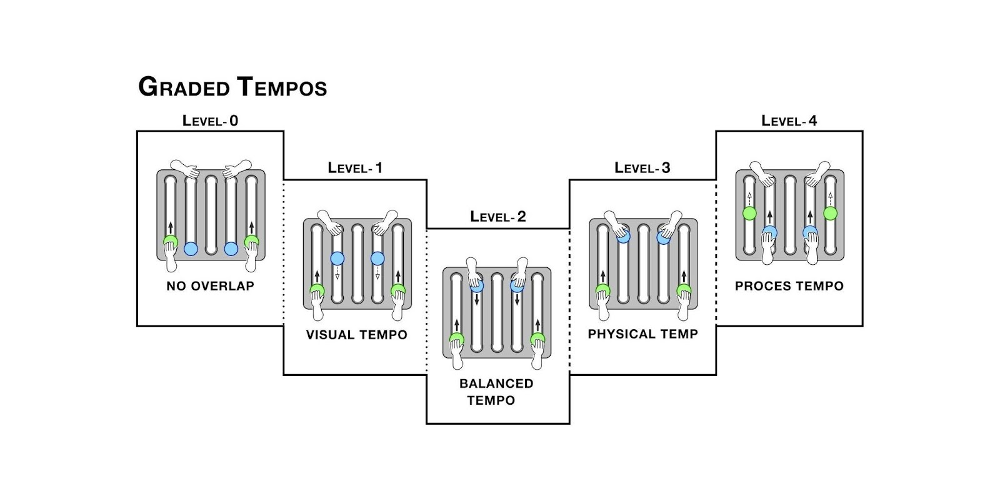</img></p>

</script></section><section data-markdown><script type="text/template">
<!-- .slide: data-background-image="Bilder/blue-abstract-gradient-wave-wallpaper.jpg" -->
# Exercise : Primary Composition

- in pairs of two, train the patterns of the primary composition
- in Zweiergruppen die Muster der "Primary Composition" trainieren<!-- .element: style="color: blue" -->
- change who is facilitating
- wechseln Sie, wer anleitet<!-- .element: style="color: blue" -->
- first try to stick to patterns 1-4 
- Versuchen Sie zunächst, sich an die Muster 1-4 zu halten. <!-- .element: style="color: blue" -->
- at the end exercise pattern 5: (42135*)
- am Ende üben Sie Muster 5: (42135*)<!-- .element: style="color: blue" -->

<p style="line-height: 0" class="reset-paragraph"></img></p>

</script></section><section data-markdown><script type="text/template">
# Exercise : Full Primary Composition

- in pairs of two
- in Zweiergruppen<!-- .element: style="color: blue" -->
- based on the handouts given, train more parts of the primary composition
- auf der Grundlage der gegebenen Handouts weitere Teile der Primärkomposition trainieren<!-- .element: style="color: blue" -->
</script></section><section data-markdown><script type="text/template">
<!-- .slide: data-background-image="Bilder/blue-abstract-gradient-wave-wallpaper.jpg" -->
# Exercise: Composition and Writing

- Take five everyday objects, arrange them on 5-points and create a sequence of movements based on prop-swap notation.
- Nehmen Sie fünf alltägliche Objekte, ordnen sie diese auf 5-Punkten an und erschaffen Sie eine Sequenz von Bewegungen auf Basis der Prop-Swap Notation.<!-- .element: style="color: blue" -->
- Interactions can be formed either by static, dynamic or combined variations of both.
- Interaktionen können entweder durch statische, dynamische oder kombinierte Variationen von beidem gebildet werden.<!-- .element: style="color: blue" -->
- Choreograph a personalized sequence of different patterns and then notate your composition using Propswap.
- Choreographieren Sie eine personalisierte Sequenz verschiedener Muster und notieren Sie anschließend Ihre Komposition mit Propswap.<!-- .element: style="color: blue" -->
</script></section></section><section ><section data-markdown><script type="text/template">
<!-- .slide: data-background-image="Bilder/blue-abstract-gradient-wave-wallpaper.jpg" -->
# Part 7 : Prop Swap Notation Advanced
</script></section><section data-markdown><script type="text/template">
<!-- .slide: data-background-image="Bilder/blue-abstract-gradient-wave-wallpaper.jpg" -->
# Open State
- describes a form of interaction that starts in one location and ends in another.
- beschreibt eine Form der Interaktion, die an einem Ort beginnt und an einem anderen endet.<!-- .element: style="color: blue" -->
- written in brackets and dashmark
- wird mit eckigen Klammern sowie einer Tilde zwischen den Zahlen notiert<!-- .element: style="color: blue" -->
- ```[2~3]``` objects starts in position 2 and comes back in position 3
- ```[2~3]``` Objekt startet in Position 2 und kommt zurück auf Position 3<!-- .element: style="color: blue" -->
</script></section><section data-markdown><script type="text/template">
<!-- .slide: data-background-image="Bilder/blue-abstract-gradient-wave-wallpaper.jpg" -->
## Open State Synchronous Lateral

```
.
- [23~45]
- 
- [23~41] [23~15]
- .
```

## Open State Asynchronous
```
.
- [2~4][3~5]
- 
- [2~4][3~1][2~1][3~5]

and more...

- [1~2][1~3]
- 
- [1~2][1~3][1~4][1~5]
- 
- [1~4][1~2][1~3][1~5]
- 
- [1~4][1~2][1~4][1~5][1~3][1~5]
- 
- [1~2][1~2][1~2][1~3][1~3][1~3]
.
```
</script></section><section data-markdown><script type="text/template">
<!-- .slide: data-background-image="Bilder/blue-abstract-gradient-wave-wallpaper.jpg" -->
# Mixed state notation

- Mixed-state notation represents a form of interaction that combines the activities of both fixed and open-state together
- Die Notation mit gemischten Mustern stellt eine Form der Interaktion dar, die die Aktivitäten von festen und offenen Mustern miteinander verbindet.<!-- .element: style="color: blue" -->
- we do not consider them universally accessible for everyone
- wir halten sie nicht für universell zugänglich für jedermann<!-- .element: style="color: blue" -->
- it uses dissociated movements
- sie verwendet dissoziierte Bewegungen<!-- .element: style="color: blue" -->

### Synchronous

```
.
- ([2~4]3)([2~4]5)
- 
- (2[3~5])(4[3~5])
- 
- ([2~1]5)([3~1]4)
.

```

### Asynchronous

```
.
- [2~4]3[2~4]5
- 
- 2[3~5]4[3~5]
- 
- [2~1]5[3~1]4
.

```
</script></section><section data-markdown><script type="text/template">
<!-- .slide: data-background-image="Bilder/blue-abstract-gradient-wave-wallpaper.jpg" -->
# Horizontal Notation
- uses letters instead of numbers and follows setup structure of left to right arrangement. This means that notation is assumed to alternate start position from left to right.
-   **example**: in ABC (cascade sequence) the first notation A is placed on the left-hand side, the second notation B is placed on the righthand side, and the third notation C is placed on the left-hand side, again.

<p style="line-height: 0" class="reset-paragraph"></img></p>

</script></section><section data-markdown><script type="text/template">
<!-- .slide: data-background-image="Bilder/blue-abstract-gradient-wave-wallpaper.jpg" -->
# Synchronous Movement
- (AB)/(BA)
- (AB)(CD)/(BA)(DC)
- (AB)(DC)/(BA)(CD)
- (AC)(BD)/(CA)(DB)

<p style="line-height: 0" class="reset-paragraph"></img></p>

</script></section><section data-markdown><script type="text/template">
<!-- .slide: data-background-image="Bilder/blue-abstract-gradient-wave-wallpaper.jpg" -->
# Asynchronous Movement
-   ABC
-   ABCDE

<p style="line-height: 0" class="reset-paragraph"></img></p>

</script></section><section data-markdown><script type="text/template">
# Including Toss-Juggling

- there is a huge field of possible patterns
- change a rolling into a tossing
- incorporate tossing patterns

Demonstration :
- using zip throws between rolls
- 2 ball cascade between rolls

> these type of activities include complex tactile movements and patterns - they can be a fun exercise or used as a training tool for advanced jugglers
</script></section></section><section ><section data-markdown><script type="text/template">
<!-- .slide: data-background-image="Bilder/blue-abstract-gradient-wave-wallpaper.jpg" -->
# Part 8 : Sensory Facilitation
# Part 8 : Vermittlungstechniken

- as a facilitator we take a more active role in the self regulation of each person’s sensory
and emotional experience
- Als Vermittler übernehmen wir eine aktivere Rolle bei der Selbstregulierung der sensorischen und emotionalen Erfahrungen der einzelnen Personen<!-- .element: style="color: blue" -->
- needs careful attention to tempo and receptive hand positioning, to be able to receive and process more information about each participant’s experience.
- erfordert eine sorgfältige Beachtung des Tempos und der Positionierung der empfangenden Hand, um mehr Informationen über die Erfahrung jedes Teilnehmers erfassen zu können.<!-- .element: style="color: blue" -->
- remember: moving objects carry information
- Denken Sie daran: Objekte in Bewegung enthalten Informationen<!-- .element: style="color: blue" -->
- a single event doesnt tell us much about the experience of the participant
- ein einzelnes Ereignis sagt uns nicht viel über die Erfahrung des Teilnehmers aus<!-- .element: style="color: blue" -->
- multiple events in rapid succession allow us to get a sense of the participants experience
- Mehrere Ereignisse in schneller Abfolge ermöglichen es uns, ein Gefühl für die Erfahrung des Teilnehmers zu bekommen.<!-- .element: style="color: blue" -->
</script></section><section data-markdown><script type="text/template">
<!-- .slide: data-background-image="Bilder/blue-abstract-gradient-wave-wallpaper.jpg" -->
# Influence Frequency
# Beeinflussung der Frequenz

- it is very important that we learn to imitate the natural frequencies of our participant’s behaviours
- es ist sehr wichtig, dass wir lernen, die natürlichen Frequenzen der Handlungen unserer Teilnehmer zu imitieren<!-- .element: style="color: blue" -->
- create a relationship of balanced tempo with them, and allow each person to determine, or set, whatever level of challenge they are most comfortable with from the start
- Finde eine Balance des Tempos mit dem Teilnehmer um es somit jeder Person zu ermöglichen, von Anfang an das Niveau der Herausforderung zu bestimmen, mit dem sie sich am wohlsten fühlt<!-- .element: style="color: blue" -->
- frome there on we are able to influence and guide the sequencing behaviours of others. 
- Von da an sind wir in der Lage, das Verhalten der anderen zu beeinflussen und zu lenken.<!-- .element: style="color: blue" --> 
- This is because there is a natural tendency of the body to want to imitate the sensory feedback information of its environment, whenever engaged in rhythmic activity.
- Das liegt daran, dass der Körper von Natur aus dazu neigt, die sensorischen Rückmeldungen seiner Umgebung zu imitieren, wenn er eine rhythmische Aktivität ausübt.<!-- .element: style="color: blue" -->
- The three conditions which influence our perception of frequency the most are those of force, time, and distance.
- Die drei Bedingungen, die unsere Wahrnehmung der Frequenz am stärksten beeinflussen, sind Kraft, Zeit und Entfernung.<!-- .element: style="color: blue" -->
</script></section><section data-markdown><script type="text/template">
<!-- .slide: data-background-image="Bilder/blue-abstract-gradient-wave-wallpaper.jpg" -->
# Force
# Kraft

- applying more force is not always the best way to influence another person’s behaviour
- Die Anwendung von mehr Kraft ist nicht immer der beste Weg, um das Verhalten einer anderen Person zu beeinflussen.<!-- .element: style="color: blue" -->
- it can cause over stimulation or even unmanageable levels of anxiety for some people.
- Bei manchen Menschen kann es zu einer Überstimulation oder sogar zu unkontrollierbaren Angstzuständen führen.<!-- .element: style="color: blue" -->

<p style="line-height: 0" class="reset-paragraph"></img></p>

</script></section><section data-markdown><script type="text/template">
<!-- .slide: data-background-image="Bilder/blue-abstract-gradient-wave-wallpaper.jpg" -->
# Distance
# Entfernung

- Learning to reduce the amounts of force we use, in proportion to the distance that events must travel, allows us to neutralise the energy levels of an activity while still progressing the frequencies of its interactions.
- - Wenn wir lernen, den Kraftaufwand im Verhältnis zur Entfernung, die die Ereignisse zurücklegen müssen, zu verringern, können wir das Energieniveau einer Aktivität neutralisieren und gleichzeitig die Frequenzen ihrer Interaktionen erhöhen.<!-- .element: style="color: blue" -->

<p style="line-height: 0" class="reset-paragraph"></img></p>

</script></section><section data-markdown><script type="text/template">
<!-- .slide: data-background-image="Bilder/blue-abstract-gradient-wave-wallpaper.jpg" -->
# Packeting

- a technique designed to assist in the transitioning of relationships between synchronous and asynchronous time.
- eine Technik, die den Übergang von synchronem zu asynchronem Timing erleichtern soll.<!-- .element: style="color: blue" -->
- It is very common for a lot of people to struggle with making this change
- Viele Menschen tun sich mit dieser Umstellung sehr schwer<!-- .element: style="color: blue" -->
- packeting means gradually transition from synchronous to asynchronous
- "packeting" bedeutet den schrittweisen/stufenlosen Übergang von synchroner zu asynchroner Zeit<!-- .element: style="color: blue" -->
</script></section><section data-markdown><script type="text/template">
<!-- .slide: data-background-image="Bilder/blue-abstract-gradient-wave-wallpaper.jpg" -->
# Sound

- Speaking instruction during facilitation is not encouraged, and should be avoided as much as possible. 
- Sprachliche Anweisungen während der Moderation sind nicht zu empfehlen und sollten so weit wie möglich vermieden werden. <!-- .element: style="color: blue" -->
- if we communicate the intention of an activity, we also create an expectation for its performance as well.
- Wenn wir die Absicht einer Aktivität kommunizieren, schaffen wir auch eine Erwartung an ihre Durchführung.<!-- .element: style="color: blue" -->
- Learning occurs best when it takes place in an environment of play, and this is the intention of our facilitation.
- Lernen gelingt am besten, wenn es in einer spielerischen Umgebung stattfindet, und das ist die Absicht unserer Anleitung.<!-- .element: style="color: blue" -->
- Gesture and sound are great alternatives to speaking
- Gesten und Geräusche sind großartige Alternativen zum Sprechen<!-- .element: style="color: blue" -->

<p style="line-height: 0" class="reset-paragraph"></img></p>

</script></section><section data-markdown><script type="text/template">
<!-- .slide: data-background-image="Bilder/blue-abstract-gradient-wave-wallpaper.jpg" -->
# Gesture
- gestures allow us to communicate non-verbally more complex movement patterns
- Gesten ermöglichen es uns, komplexere Bewegungsmuster nonverbal mitzuteilen<!-- .element: style="color: blue" -->
- i.e. the change to bilateral activity or the introduction to open-state patterns
- z. B. der Wechsel zu bilateraler Aktivität oder die Einführung von Mustern des offenen Zustands<!-- .element: style="color: blue" -->

<p style="line-height: 0" class="reset-paragraph"></img></p>

</script></section><section data-markdown><script type="text/template">
<!-- .slide: class="drop" data-background-image="Bilder/blue-abstract-gradient-wave-wallpaper.jpg" -->
# Zone of proximal development
# Zone der proximalen Entwicklung

- the space between what a learner can do without assistance and what a learner can do with  guidance
- der Bereich zwischen dem, was ein Lernender ohne Hilfe tun kann, und dem, was ein Lernender mit Anleitung tun kann<!-- .element: style="color: blue" -->
- As facilitators our goal and responsibility is to be able to manage and regulate the precise level of challenge, so that it fits within the highest limits of a person’s ZPD.
- Als Trainer ist es unser Ziel und unsere Verantwortung, das genaue Niveau der Herausforderung zu steuern und zu regulieren, so dass es innerhalb der höchsten Grenzen der ZPD einer Person liegt.<!-- .element: style="color: blue" -->

<p style="line-height: 0" class="reset-paragraph"></img></p>

<p style="line-height: 0" class="reset-paragraph">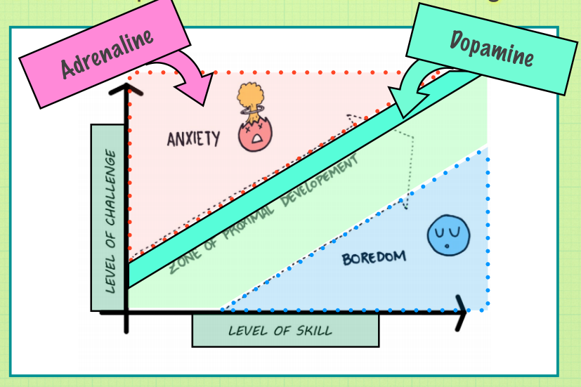</img></p>

</script></section><section data-markdown><script type="text/template">
<!-- .slide: data-background-image="Bilder/blue-abstract-gradient-wave-wallpaper.jpg" -->
# SOLO SOCIAL ACTIVITY
# Soziale Einzelaktivität

- during the primary composition, we are able to influence the emotional stress levels of their experience
- während der primären Komposition können wir den emotionalen Stresspegel ihrer Erfahrung beeinflussen<!-- .element: style="color: blue" -->
- when transitioning to horizontal arrangements, we loose this form of connection and must rely on alternative methods of communication
- Wenn wir zu horizontalen Arrangements übergehen, verlieren wir diese Form der Verbindung und müssen uns auf alternative Methoden der Kommunikation verlassen<!-- .element: style="color: blue" -->
- one option is what we call "solo social activity
- eine Möglichkeit ist das, was wir "soziale Einzelaktivität" nennen<!-- .element: style="color: blue" -->
</script></section><section data-markdown><script type="text/template">
<!-- .slide: data-background-image="Bilder/blue-abstract-gradient-wave-wallpaper.jpg" -->
# Starting point
# Startpunkt

- To begin, the juggleboard is set up horizontally so that participants roll a ball back and forth.
- Zu Beginn wird das Juggleboard horizontal aufgestellt, so dass die Teilnehmer einen Ball hin und her rollen.<!-- .element: style="color: blue" -->
- we encourage the participants to imitate us.
- Dabei ermutigen wir die Teilnehmer uns nachzuahmen.<!-- .element: style="color: blue" -->

<p style="line-height: 0" class="reset-paragraph">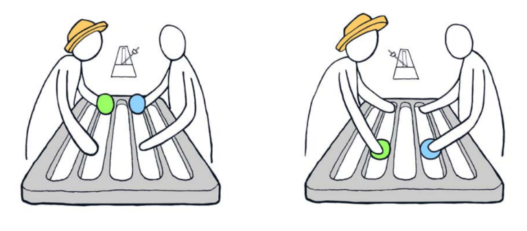</img></p>

</script></section><section data-markdown><script type="text/template">
<!-- .slide: class="drop" data-background-image="Bilder/blue-abstract-gradient-wave-wallpaper.jpg" -->
# Demonstration of "solo social activities"

- Participants often look at their hands rather than at us. 
- Oft schauen die Teilnehmer eher auf ihre Hände als auf uns. <!-- .element: style="color: blue" -->
- Before we are able to influence their behavior, we must first establish some level of eye contact with them.
- Bevor wir in der Lage sind, ihr Verhalten zu beeinflussen, müssen wir zuerst ein gewisses Maß an Blickkontakt mit ihnen herstellen.<!-- .element: style="color: blue" -->
- We accomplish this by using an opening sequence of behaviors designed to encourage more social interaction that establishes game principles as well as eye contact.
- Wir erreichen das, indem wir eine Eröffnungssequenz von Verhaltensweisen anwenden, die so gestaltet sind, dass sie zu mehr sozialer Interaktion anregen, die Spielprinzipien sowie   Blickkontakt etablieren.<!-- .element: style="color: blue" -->

<p style="line-height: 0" class="reset-paragraph">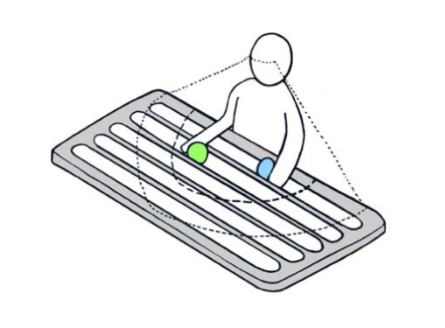</img></p>

<p style="line-height: 0" class="reset-paragraph">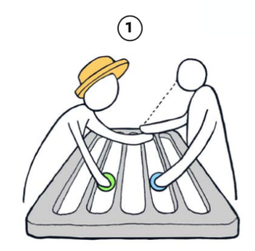</img></p>

</script></section><section data-markdown><script type="text/template">
<!-- .slide: class="drop" data-background-image="Bilder/blue-abstract-gradient-wave-wallpaper.jpg" -->
# Integration of functional objects<!-- .element: style="font-size: 60px" -->
# Integration von funktionalen Objekten<!-- .element: style="font-size: 60px; color: blue" -->

- Basically, any form of action we want our students to perform, can now be communicated simply by doing it ourselves. 
- Im Grunde genommen kann nun jede Form von Handlung, die wir von unseren Schülern wünschen, vermittelt werden, indem wir sie einfach selbst ausführen. <!-- .element: style="color: blue" -->
- This leads to a very creative and playful process of learning, in which participants are encouraged to make their own suggestions as well.
- Dies führt zu einem sehr kreativen und spielerischen Lernprozess, bei dem die TeilnehmerInnen ermutigt werden, auch ihre eigenen Vorschläge zu machen.<!-- .element: style="color: blue" -->

<p style="line-height: 0" class="reset-paragraph"></img></p>

<p style="line-height: 0" class="reset-paragraph"></img></p>

</script></section><section data-markdown><script type="text/template">
<!-- .slide: data-background-image="Bilder/blue-abstract-gradient-wave-wallpaper.jpg" -->
# Practice

- in pairs of two
- in Zweiergruppen<!-- .element: style="color: blue" -->
- try out solo social activity
- soziale Einzelaktivitäten ausprobieren<!-- .element: style="color: blue" -->
- experiment with different actions/objects
- mit verschiedenen Aktionen/Objekten experimentieren<!-- .element: style="color: blue" -->
</script></section><section data-markdown><script type="text/template">
<!-- .slide: data-background-image="Bilder/blue-abstract-gradient-wave-wallpaper.jpg" -->
# Summary

>- solo social activities have the ability to be adapted and modified seamlessly without interruption or the need for verbal communication.
>-  Die sozialen Solo-Aktivitäten können nahtlos angepasst und verändert werden, ohne dass eine Unterbrechung oder verbale Kommunikation erforderlich ist.<!-- .element: style="color: blue" -->
>- This makes it a highly effective tool for generating time on task and repetition with whatever motor control movement or social behaviour we want our participants to practice.
>- Dies macht es zu einem äußerst effektiven Werkzeug, um die Zeit die wir mit der Aufgabe verbringen und die Wiederholung von motorischen Bewegungen oder sozialen Verhaltensweisen, die unsere Teilnehmer üben sollen, zu erhöhen.<!-- .element: style="color: blue" -->
</script></section></section><section ><section data-markdown><script type="text/template">
<!-- .slide: data-background-image="Bilder/blue-abstract-gradient-wave-wallpaper.jpg" -->
# Part 9 : Supporting Independence<!-- .element: style="font-size: 60px" -->
# Teil 9: Unterstützung der Selbständigkeit<!-- .element: style="font-size: 60px; color: blue" -->

- The ability to experience juggling independently is the ultimate goal of every facilitation
- Die Fähigkeit, Jonglieren selbstständig zu erleben, ist das Ziel jeder Unterstützung.<!-- .element: style="color: blue" -->
- in horizontal arrangements participants are now required to manage all of the influences of sensory information on their own. 
- In horizontalen Arrangements müssen die Teilnehmer nun alle Einflüsse der sensorischen Informationen selbst bewältigen. <!-- .element: style="color: blue" -->
- This has a tendency to lead to large levels of stress and hyperactivity for many participants, because the tactile inaccuracies of their own behaviours can now begin to influence them back.
- Dies kann bei vielen Teilnehmern zu einem hohen Maß an Stress und Hyperaktivität führen, da die taktilen Ungenauigkeiten ihres eigenen Verhaltens sie nun wieder beeinflussen können.<!-- .element: style="color: blue" -->

<p style="line-height: 0" class="reset-paragraph"></img></p>

</script></section><section data-markdown><script type="text/template">
<!-- .slide: data-background-image="Bilder/blue-abstract-gradient-wave-wallpaper.jpg" -->
# static interactions / reducing tempo<!-- .element: style="font-size: 60px" -->
# statische Interaktion / Tempo reduzieren<!-- .element: style="font-size: 60px; color: blue" -->

- In some  situations, participants can exhibit particularly high levels of anxiety
- In manchen Situationen können die Teilnehmer ein besonders hohes Maß an Angst oder Stress aufweisen<!-- .element: style="color: blue" -->
- to help with this, one strategy is to reduce the tempo and allow the balls to come to a complete rest
- Eine Strategie zur Bewältigung dieser Situation besteht darin, das Tempo zu verringern und die Kugeln vollständig zur Ruhe kommen zu lassen.<!-- .element: style="color: blue" -->
- removes their responsibility for having to harmonise with the sensory feedback information of its motion.
- Dadurch werden sie von der Verantwortung befreit, mit den sensorischen Rückmeldungen über die Bewegung des Balls in Einklang zu kommen.<!-- .element: style="color: blue" -->

<p style="line-height: 0" class="reset-paragraph"></img></p>

</script></section><section data-markdown><script type="text/template">
<!-- .slide: data-background-image="Bilder/blue-abstract-gradient-wave-wallpaper.jpg" -->
# forward inclines<!-- .element: style="font-size: 60px" -->
# Vorwärst Neigung<!-- .element: style="font-size: 60px; color: blue" -->

- another way to encourage independence is to use an inclined juggleboard
- eine weitere Möglichkeit, die Unabhängigkeit zu fördern, ist die Verwendung eines geneigten Juggle Boards<!-- .element: style="color: blue" -->
- depending on the degree of its elevation, the tempo can altered
- je nach dem Grad der Neigung kann das Tempo verändert werden<!-- .element: style="color: blue" -->
- facilitators can also help in a form of "shadow juggling" 
- Moderatoren können auch mit einer Form der "Schattenjonglage" helfen. <!-- .element: style="color: blue" -->

<p style="line-height: 0" class="reset-paragraph"></img></p>

</script></section><section data-markdown><script type="text/template">
<!-- .slide: data-background-image="Bilder/blue-abstract-gradient-wave-wallpaper.jpg" -->
# absence of vision<!-- .element: style="font-size: 60px" -->
# geschlossene Augen<!-- .element: style="font-size: 60px; color: blue" -->

- Perform exercises with eyes closed
- Übungen mit geschlossenen Augen durchführen<!-- .element: style="color: blue" -->
- Promotes sensory processing of tactile information and causes participants to slow down their pace
- fördert die sensorische Verarbeitung von taktilen Informationen und veranlasst die Teilnehmer, ihr Tempo zu verlangsamen<!-- .element: style="color: blue" -->

<p style="line-height: 0" class="reset-paragraph"></img></p>

</script></section></section><section ><section data-markdown><script type="text/template">
<!-- .slide: data-background-image="Bilder/blue-abstract-gradient-wave-wallpaper.jpg" -->
# Part 10 : Functional Transformation<!-- .element: style="font-size: 60px" -->

- solo social activity allows us to engage participants in playful explorations of diverse sequencing movements, with a wide variety of objects
- diese Übungen ermöglichen es uns, die Teilnehmer in die spielerische Erkundung verschiedener Bewegungsabläufe mit einer Vielzahl von Objekten einzubeziehen.<!-- .element: style="color: blue" -->
- In terms of pure clinical benefits, the outcomes of this activity produce the potential for up to 60 repetitions per minute (600 reps per 10 mins)
- Was den reinen klinischen Nutzen angeht, so bieten die Ergebnisse dieser Aktivität das Potenzial für bis zu 60 Wiederholungen pro Minute (600 Wiederholungen pro 10 Minuten)<!-- .element: style="color: blue" -->
- it is simultaneously developing bilateral sequencing capacities, stimulating global activation, and enhancing social and emotional communication skills.
- es werden gleichzeitig die bilateralen Sequenzierungsfähigkeiten entwickelt, die globale Aktivierung stimuliert und die sozialen und emotionalen Kommunikationsfähigkeiten verbessert.<!-- .element: style="color: blue" -->

<p style="line-height: 0" class="reset-paragraph"></img></p>

</script></section><section data-markdown><script type="text/template">
<!-- .slide: data-background-image="Bilder/blue-abstract-gradient-wave-wallpaper.jpg" -->
# therapeutic application

- by applying Spatial sequencing maps and the theory of process formations we extend the spectrum of juggling
- durch die Anwendung der Theorien der  "Räumlichen Anordnungen" sowie der "Process Formations" erweitern wir das Spektrum des Jonglierens<!-- .element: style="color: blue" -->
- we transform the beneficial outcomes of these activities into completely new fields of therapeutic application
- wir transformieren die positiven Ergebnisse dieser Aktivitäten in völlig neue therapeutische Anwendungsfelder<!-- .element: style="color: blue" -->

<p style="line-height: 0" class="reset-paragraph"></img></p>

</script></section><section data-markdown><script type="text/template">
<!-- .slide: data-background-image="Bilder/blue-abstract-gradient-wave-wallpaper.jpg" -->
# more examples

- There are literally endless combinations and structures to these forms of functional and social interactions with juggling
- Es gibt buchstäblich endlose Kombinationen und Strukturen für diese Formen der funktionalen und sozialen Interaktion mit dem Jonglieren<!-- .element: style="color: blue" -->
- it only depends on the intentions of our facilitation
- es hängt nur von den Absichten unserer Anleitung ab<!-- .element: style="color: blue" -->

<p style="line-height: 0" class="reset-paragraph"></img></p>

</script></section><section data-markdown><script type="text/template">
<!-- .slide: class="drop" data-background-image="Bilder/blue-abstract-gradient-wave-wallpaper.jpg" -->
# intentional design
- Designing these exercises around the capabilities of each participant’s needs, as opposed to their limitations
- Gestaltung dieser Übungen nach den Bedürfnissen der Teilnehmer und nicht nach deren Einschränkungen<!-- .element: style="color: blue" -->

<p style="line-height: 0" class="reset-paragraph"></img></p>

<p style="line-height: 0" class="reset-paragraph"></img></p>

</script></section><section data-markdown><script type="text/template">
<!-- .slide: data-background-image="Bilder/blue-abstract-gradient-wave-wallpaper.jpg" -->
# even more examples
<p style="line-height: 0" class="reset-paragraph"></img></p>

</script></section><section data-markdown><script type="text/template">
# Practice: Markers

- in pairs of two, using markers and a paper
- go through primary composition
- the type of event/action is passing the markers while painting lines on paper
- starting with straight lines
- after rhytm is there, start getting more creative / free in your movements while still preserving the pattern
</script></section><section data-markdown><script type="text/template">
**Activity-1:** In pairs of two, setup 5 markers and use classical juggle board structure to begin understanding of activity. Engagement begins in structured linear form, but as partners harmonise their timing can become more open and creative with different expressions of line drawing.

**Activity-2:** In same pairs of two, setup 5 markers and establish new order of agreeing to draw same concept of a house or circus theme. This introduce high level social understanding and awareness of others intention, while also problem solving personal intention and desired outcome. This shifts the activity focus to have more concern and intention of quality, but does so in a very playful distracting way that continues to strengthen the positively associated relationship with the object.

**Key Notes:**

-   The ability to process intention into fine motor control movements of using a writing tool is very complex and abstract process. Failure to develop this capacity early on in childhood development can have long lasting negative effects on students performance. Self awareness of lower level ability or punishment in the form of bad grades and personal evaluation can create negative association and cause student to avoid the very task they need to practice, which leads to further disadvantages.
-   Transforming drawing into juggling activity leaves behind a documented representation of the exercise and allows student to take pride in their achievement.
-   The exercise not only reshapes personal perspective of ability and confidence, but also transforms outside peer perspective of individual capacity, as the student is able to share their new abilities with their peers. This reshapes entire perspective of self image and social acceptance.

**Activity-3:**  
Bringing together the entire group into one drawing exercise, setup one large piece of paper and give each participant one marker. Using bi-lateral alternating hand movement setup simple structure of always passing to the right and receiving from the left. Instruct the group to begin with more linear movements, but as the group harmonies, encourage them to be more expressive with their movements and to allow themselves to feel the collected rhythm and harmony of the group.

**Key Notes:**

-   Use of musical track is important to this exercise as it gives the larger group a baseline frequency to respond to as they develop collected awareness of each other.
-   Following completion of this activity allow participants to reflect on their experience by observing the drawing of each pair and the collected group.
-   Point out the clear differences in emotion and energy of each drawing. Drawings are the result of personalised experience between groups of two or more people and express the energy relationship between members.
-   Make concluding point that Functional Juggling is actually a communication tool that allows us to express, share, and nurture emotional, cognitive, and physical capacity developments :) 
</script></section><section data-markdown><script type="text/template">
<!-- .slide: data-background-image="Bilder/blue-abstract-gradient-wave-wallpaper.jpg" -->
# conclusion
# Schlussfolgerung<!-- .element: style="color: blue" -->

> - Literally any capacity that requires repetition and time on task to be able to develop, can be integrated into an activity of Functional Juggling.
> - Buchstäblich jede Fähigkeit, die Wiederholung und Zeit an der Aufgabe erfordert, um sich entwickeln zu können, kann in eine Aktivität des funktionellen Jonglierens integriert werden.<!-- .element: style="color: blue" -->

</script></section></section><section ><section data-markdown><script type="text/template">
<!-- .slide: data-background-image="Bilder/blue-abstract-gradient-wave-wallpaper.jpg" -->
# Part 11 : The Future / Getting involved

- everything created and produced by the Quat Props community of functional jugglers is considered to be open source
- alles, was von der Quat Props Community der funktionalen Jongleure geschaffen und produziert wird, wird als Open Source betrachtet<!-- .element: style="color: blue" -->
- Our expectation in sharing the concepts of Functional Juggling is to inspire people to think more boldly about their own interpretations of the idea, and to provide a framework by which to begin to explore.
- Mit der Weitergabe der Konzepte des funktionalen Jonglierens wollen wir Menschen dazu inspirieren, mutiger über ihre eigenen Interpretationen der Idee nachzudenken und einen Rahmen zu schaffen, mit dem sie beginnen können, diese zu erforschen.<!-- .element: style="color: blue" -->
</script></section><section data-markdown><script type="text/template">
<!-- .slide: data-background-image="Bilder/blue-abstract-gradient-wave-wallpaper.jpg" -->
# equipment

- no special equipment is required to perform the activities
- für die Durchführung der Aktivitäten ist keine spezielle Ausrüstung erforderlich<!-- .element: style="color: blue" -->
- there are several commercial and open source options for things like the Juggleboard, the Newton and others
- es gibt mehrere kommerzielle und Open-Source-Optionen für Dinge wie das Juggleboard, das Newton und andere<!-- .element: style="color: blue" -->
- </script></section><section data-markdown><script type="text/template">
<!-- .slide: data-background-image="Bilder/blue-abstract-gradient-wave-wallpaper.jpg" -->
# community
- by using and exploring these ideas, you are already part of the community
- Wenn Sie diese Ideen nutzen und erforschen, sind Sie bereits Teil der Gemeinschaft.<!-- .element: style="color: blue" -->
- www.quatprops.net/collective
- https://www.facebook.com/QuatProps
</script></section><section data-markdown><script type="text/template">
<!-- .slide: data-background-image="Bilder/blue-abstract-gradient-wave-wallpaper.jpg" -->
<p style="line-height: 0" class="reset-paragraph"></img></p>


Marc Bielert
EigenArts-Halle
[kontakt@eigenarts-halle.de](mailto:kontakt@eigenarts-halle.de)
0160 - 189 32 70
</script></section><section data-markdown><script type="text/template">
<!-- .slide: class="drop" data-background-image="/Bilder/46514050_584083148712701_263200109909508096_n.jpg" -->

<div class="has-light-background reset-margin" style="background-color: #FFFFFF55; padding: 60px; box-sizing: border-box; filter: blur(10px); position: absolute; left: 0px; top: 960px; height: 240px; min-height: 240px; width: 960px; display: flex; flex-direction: column; align-items: center; justify-content: space-evenly" align="justify">

</div>
<div class="has-light-background reset-margin" style="background-color: #FFFFFF00; padding: 60px; box-sizing: border-box; position: absolute; left: 0px; top: 960px; height: 240px; min-height: 240px; width: 960px; display: flex; flex-direction: column; align-items: center; justify-content: space-evenly" align="justify">

# **Die Spielgeräte**
</div>
</script></section><section data-markdown><script type="text/template">
<!-- .slide: class="drop" data-background-image="Bilder/blue-abstract-gradient-wave-wallpaper.jpg" -->
<p style="line-height: 0" class="reset-paragraph"></img></p>

<p style="line-height: 0" class="reset-paragraph"></img></p>

<p style="line-height: 0" class="reset-paragraph"></img></p>

<div class="has-light-background reset-margin" style="background-color: #FFFFFF00; padding: 20px; box-sizing: border-box; position: absolute; left: 1478.3999999999999px; top: 60px; height: 456px; min-height: 456px; width: 460.79999999999995px; display: flex; flex-direction: column; align-items: center; justify-content: space-evenly" >

## **Das "Newton"**
</div>
</script></section><section data-markdown><script type="text/template">
<!-- .slide: class="drop" data-background-image="Bilder/blue-abstract-gradient-wave-wallpaper.jpg" -->
<p style="line-height: 0" class="reset-paragraph">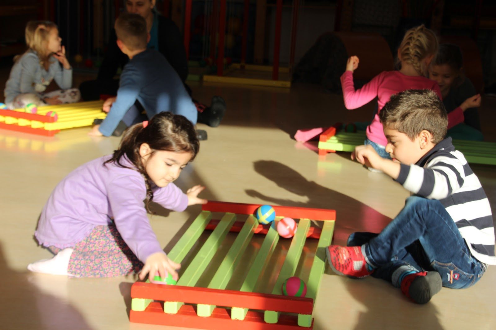</img></p>

<p style="line-height: 0" class="reset-paragraph"></img></p>

<p style="line-height: 0" class="reset-paragraph"></img></p>

<div class="has-light-background reset-margin" style="background-color: #FFFFFF00; padding: 20px; box-sizing: border-box; position: absolute; left: 0px; top: 780px; height: 240px; min-height: 240px; width: 1920px; display: flex; flex-direction: column; align-items: center; justify-content: space-evenly" >

# **Das Juggleboard**
</div>
</script></section><section data-markdown><script type="text/template">
<!-- .slide: data-background-image="Bilder/blue-abstract-gradient-wave-wallpaper.jpg" -->
<p style="line-height: 0" class="reset-paragraph"></img></p>

</script></section><section data-markdown><script type="text/template">
<!-- .slide: data-background-image="Bilder/blue-abstract-gradient-wave-wallpaper.jpg" -->
<p style="line-height: 0" class="reset-paragraph"></img></p>
</script></section></section></div>
    </div>

    <script src="dist/reveal.js"></script>

    <script src="plugin/markdown/markdown.js"></script>
    <script src="plugin/highlight/highlight.js"></script>
    <script src="plugin/zoom/zoom.js"></script>
    <script src="plugin/notes/notes.js"></script>
    <script src="plugin/math/math.js"></script>
	<script src="plugin/mermaid/mermaid.js"></script>
	<script src="plugin/menu/menu.js"></script>
	<script src="plugin/customcontrols/plugin.js"></script>

    <script>
      function extend() {
        var target = {};
        for (var i = 0; i < arguments.length; i++) {
          var source = arguments[i];
          for (var key in source) {
            if (source.hasOwnProperty(key)) {
              target[key] = source[key];
            }
          }
        }
        return target;
      }

      // default options to init reveal.js
      var defaultOptions = {
        controls: true,
        progress: true,
        history: true,
        center: true,
        transition: 'default', // none/fade/slide/convex/concave/zoom
        plugins: [
          RevealMarkdown,
          RevealHighlight,
          RevealZoom,
          RevealNotes,
          RevealMath.MathJax3,
		  RevealMermaid,
		  RevealCustomControls,
		  RevealMenu,
        ],

		mathjax3: {
			mathjax: 'plugin/math/mathjax/tex-mml-chtml.js',
		},

		customcontrols: {
			controls: [
			]
		},
		menu: {
			loadIcons: false
		}
      };

      // options from URL query string
      var queryOptions = Reveal().getQueryHash() || {};

      var options = extend(defaultOptions, {"width":1920,"height":1200,"margin":0,"controls":true,"controlsTutorial":true,"progress":true,"slideNumber":true,"navigationMode":"default","transition":"slide","transitionSpeed":"slow"}, queryOptions);
    </script>

    <script>
      Reveal.initialize(options);
    </script>
  </body>
</html>
